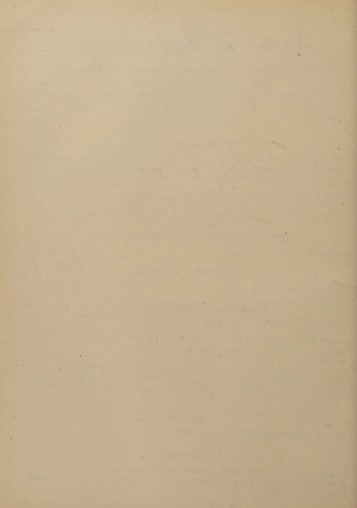
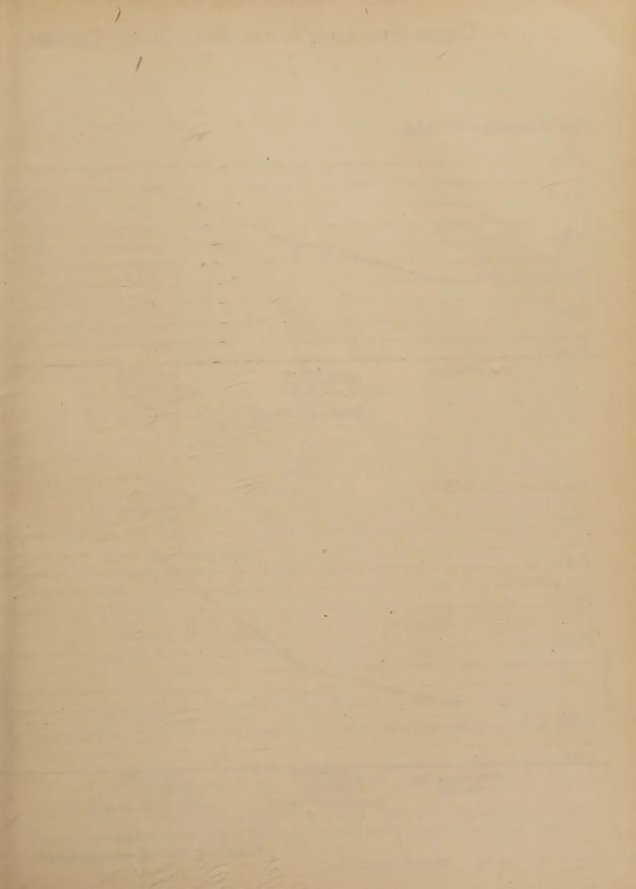
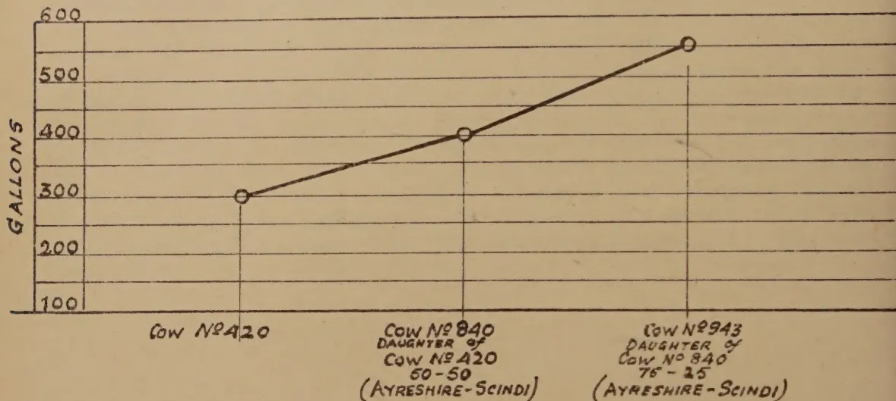
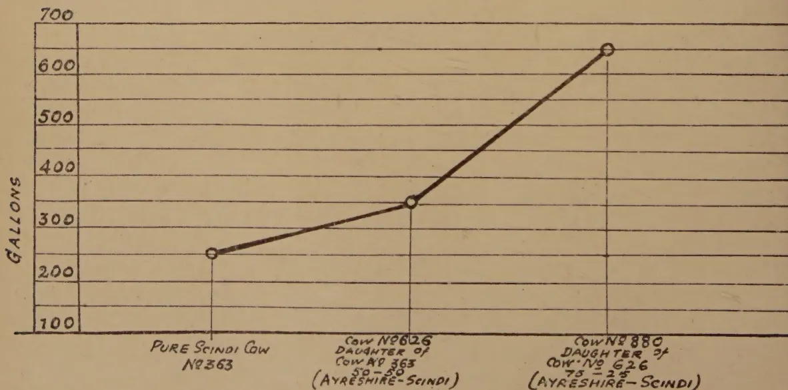
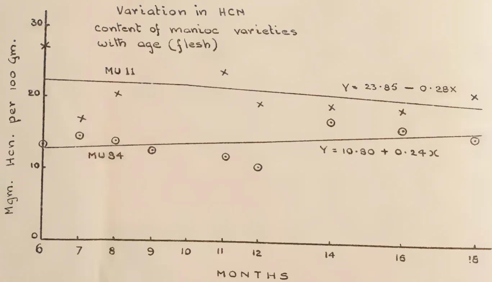
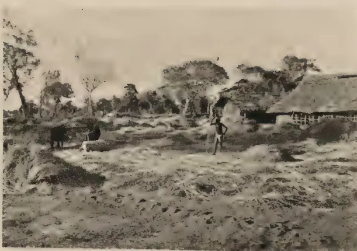
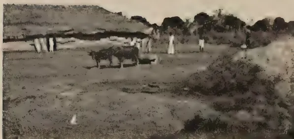
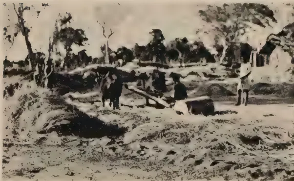

VOL. C.
PERADENIYA, JULY-SEPTEMBER, 1944.
No. 3
| Page | |
|---|---|
| Editorial .. .. . | 145 |
| Cross Breeding of Cattle in Ceylon. By J. Habaragoda, G.B.V.C., J.P. .. | 147 |
| Investigations of the Hydrocyanic Acid Content of Manioc (Manihot Utilissima). By A. W. R. Joachim, Ph.D. (Lond.), Dip. Agric. (Cantab.) and D. G. Pandittesekere, Dip. Agric. (Poona) .. .. . | 150 |
| Studies in Manioc and Lima-Beans with Special Reference to Their Utilization as Harmless Food. By C. Charavanapavan, M.Sc., D.I.C., A.R.I.C. .. | 164 |
| Roller for Threshing. By C. R. Karunaratne, Dip. Agric. (Poona), Dip. Agric. (Wye) .. .. . | 169 |
| Chemical Notes No. 18 Pyrethrum .. .. . | 171 |
| The Folly of Deep Ploughing .. .. . | 174 |
| Report of the Proceedings of the Inaugural Meeting of the Reconstituted Central Board of Agriculture .. .. . | 177 |
| Minutes of the 71st Meeting of the Rubber Research Board .. .. . | 188 |
| Minutes of a Meeting of the Board of the Tea Research Institute of Ceylon .. | 190 |
| Draft Minutes of the Third Meeting of the Paddy Advisory Board .. .. . | 194 |
| Minutes of the 68th Meeting of the Board of Management, Coconut Research Scheme .. | 200 |
| Minutes of the 69th Meeting of the Board of Management, Coconut Research Scheme .. | 202 |
| Minutes of the Adjourned 69th Meeting of the Board of Management, Coconut Research Scheme .. .. . | 203 |
| Tea under International Regulation—V. D. Wickizer .. .. . | 204 |
| Animal Disease Return for the Month ended September 30, 1944 .. .. . | 205 |
| Meteorological Reports for July to September, 1944 .. .. . | 206-208 |
1—J. N. A 45856 (1/45)
[Faint page: no legible print of its own could be verified; text withheld (stage 4 review list)]

This image shows a blank, aged, cream-colored page, likely an endpaper or flyleaf from an old book. The paper has a slightly textured appearance with some minor blemishes and faint horizontal lines, possibly from the binding or the scanning process. There is no text or other content on the page.The
JULY TO SEPTEMBER, 1944.
THE short article on Cross Breeding in Ceylon and the extract from the report of the Indian Science Congress Association come at a very opportune moment when large numbers of grade cattle are being imported from Australia by the Government.
It is necessary to examine the conclusions very closely in order that we may not read more into them than is meant. It must be remarked in passing that the observations made at the Government Dairy at Narahenpita cannot be taken as decisive because they appear to have been discontinued at a stage before the results could point to a definite conclusion.
Firstly, it may now be taken as established that crossing local breeds with European cattle as a policy for the general improvement of Indian animals is unsuitable. One must not, however, overlook the fact that the first cross-bred daughter gives more than 50 per cent. higher yields than her Indian dam, while retaining presumably to a satisfactory degree the stamina and other desirable qualities of the latter. It follows, therefore, that where milk is the prime requisite, the utilization of the first cross is a method not to be lightly ignored.
Secondly, efforts at acclimatizing European cattle to "Indian conditions" and breeding them pure have not been encouraging. That is to say, it is yet premature to lay down that such efforts would not be successful, although observations up to date point to an unfavourable conclusion. It would be interesting to know what the "Indian Conditions" referred to are. Could this mean a more or less tropical climate in surroundings replete with tropical disease? If so, one cannot resist the inquiry whether European cattle cannot be bred true to type in India under temperate conditions and hygienic surroundings. The question assumes importance to us, as our two largest cattle farms are in the up-country zone. Certainly, most dairy-men will agree that even large quantities of milk are not worth exchanging for peace of mind and judged by this criterion an Indian breed of fair performance is more desirable than a European breed giving high yields of milk—as far as this country is concerned. One can cite with confidence the nervous tension spent in managing the Ayrshires and Friesians at Bopatalawa Farm as against the serenity and freedom from care enjoyed by those who look after the Scindis at Polonnaruwa.
Thirdly, the only sure way of improving the indigenous breeds for milk production is to breed for the purpose by pure line selection. For Ceylon, "indigenous breeds" must be taken to include Indian breeds also.
146The only true indigenous cattle in this Island are the small type of cattle known locally as Sinhala cattle. Many years will have to pass before a strain is evolved from these that will make dairying a profitable enterprise. In the meantime, the people of the country are getting nutrition-minded and are rightly thinking in terms of so many pints per family per week for themselves and their progeny. How could the milk requirements of the country and the demands of scientific breeding be reconciled ?
For a solution, a compromise seems called for. Let us cross our local animals with European breeds for our commercial dairies, using the first and second crosses only. Side by side with this, let us improve the herds of Sahiwals and Scindis that we possess until their milk yields and their immunity from disease make them an attractive type for the dairyman ; let us try to acclimatize the European breeds in our more elevated and temperate regions, breeding them pure ; finally, let us watch closely the performances of the black Sinhala herd at Karagoda Uyangoda and the brown Sinhala herd at Karadiyan Aru and try to evolve from them strains that are capable of high milk yields combined with their characteristic hardiness to the same degree, if possible, as they now possess.

This image shows a single, blank page of aged paper. The paper has a warm, light brown or tan color, characteristic of old documents. There are several faint, horizontal creases or lines across the page, possibly from being folded or stored in a book. The surface has a slightly textured appearance with some minor discoloration and small dark spots, likely due to age or handling. Near the top edge, there are some very faint, illegible markings that appear to be bleed-through from the reverse side of the page. The overall appearance is that of a flyleaf or endpaper from an old book.1.
PURE SCINDI Cow No 420.

A line graph showing milk production in gallons over three time periods. The y-axis is labeled 'GALLONS' and ranges from 100 to 600 in increments of 100. The x-axis labels are 'Cow No 420', 'Cow No 840 DAUGHTER OF Cow No 420 50-50 (AYRESHIRE-SCINDI)', and 'Cow No 943 DAUGHTER OF Cow No 840 75-25 (AYRESHIRE-SCINDI)'. The data points are approximately (1, 290), (2, 395), and (3, 555).
| Cow | Milk Production (Gallons) |
|---|---|
| Cow No 420 | 290 |
| Cow No 840 (Daughter of Cow No 420, 50-50, Ayreshire-Scindi) | 395 |
| Cow No 943 (Daughter of Cow No 840, 75-25, Ayreshire-Scindi) | 555 |
2.
PURE SCINDI Cow No 363

A line graph showing milk production in gallons over three time periods. The y-axis is labeled 'GALLONS' and ranges from 100 to 700 in increments of 100. The x-axis labels are 'PURE SCINDI Cow No 363', 'Cow No 626 DAUGHTER OF Cow No 363 50-50 (AYRESHIRE-SCINDI)', and 'Cow No 880 DAUGHTER OF Cow No 626 75-25 (AYRESHIRE-SCINDI)'. The data points are approximately (1, 230), (2, 330), and (3, 630).
| Cow | Milk Production (Gallons) |
|---|---|
| PURE SCINDI Cow No 363 | 230 |
| Cow No 626 (Daughter of Cow No 363, 50-50, Ayreshire-Scindi) | 330 |
| Cow No 880 (Daughter of Cow No 626, 75-25, Ayreshire-Scindi) | 630 |
J. HABARAGODA
MANAGER, GOVT. DAIRY, COLOMBO.
27. 9. 44
PRINTED BY SURVEY DEPT., CEYLON, FEB. 1945.
No 512
FROM ORIGINAL SUPPLIED BY D.A.
147J. HABARAGODA, G.B.V.C., J.P.,
MANAGER, GOVERNMENT DAIRY, COLOMBO
IN the matter of evolving a permanent fixed cross breed of cattle for Ceylon, it will be useful to take into consideration the results of the large volume of work done in this direction in India for over 30 years. Results of their experiments have been interesting, although mostly negative in nature.
Cross breeding between Ayrshire and Scindi cattle has been done for a number of years, at the Government Dairy, Colombo.
The first cross of the two breeds resulted in a 50 + 50 Ayrshire-Scindi—amalgamating the hardiness of the Scindi and the milking capacity of the Ayrshire.
Second cross of a 50 + 50 Ayrshire-Scindi heifer, with a pure bred unrelated Ayrshire bull has produced a 75 + 25 Ayrshire-Scindi breed with a higher milk yield, but constitutionally, inclined to be less hardy. It was found not prudent to raise the breed a point beyond the 75 per cent. on the Ayrshire side as it would not suit the local conditions. We have therefore fluctuated the limits of the breed between 50 and 75 per cent. with the use of Scindi and Ayrshire bulls, alternately.
This cross breed was found useful and suitable for commercial dairy purposes but it is still very doubtful in view of the results of the long Indian Experiment, whether the increased milk yield, stamina and constitution could be maintained permanently in the subsequent generations.
(See chart showing the improvement in the milk yield of a Scindi-Ayrshire cow in subsequent generations. Experiment at the Government Dairy, Colombo.)
India has not so far succeeded, in evolving a fixed cross breed with their own well established breeds and the European cattle.
In Ceylon the chances of success are still less in evolving a permanent fixed cross breed from Indian and European cattle which are both foreign to Ceylon.
With regard to our indigenous “Sinhala Cattle” the only sure way of improving the breed for milk production will be by systematic pure line selective breeding with the definite aim of developing a higher milk yielding strain.
With systematic breeding and rearing, Indian cows have been developed to increase their yield by 60 per cent. in subsequent generations within a short space of 11 years.
With a similar improvement in the milk yield the “Sinhala Cow” will be an ideal “household-cow” with all her usefulness as an economical, disease-resisting, and hardy animal.
148I would suggest that efforts should be made in pure line selective breeding in Ceylon and gradually give up cross breeding, as we go on fixing up the pure breeds, to Ceylon conditons, permanently.
Reference :—Extract from the report of the Indian Science Congress Association, on cattle breeding.
“ONE of the first problems the enterprising dairymen had to face in starting dairies on commercial lines was to find a suitable dairy animal which would produce milk economically to make dairying a paying proposition. India has some excellent established breeds of cattle which have outstanding merits, as compared to cattle of other parts of the world except in the matter of milk production. Indian cattle have wonderful stamina to stand the rigours of the tropics. Resistance to diseases is developed to a degree which can be claimed by no other bovine population of the world. But their performance at the pail is most disappointing. The attention of the early pioneers in dairying was, therefore, mainly directed towards such methods as could increase the milk of the Indian cow in the shortest possible time. They, therefore, resorted to crossing Indian breeds with some of the well-known Western dairy breeds of cattle.
The work done in this line for over 30 years, and mostly by the Military Farms Department, has yielded results of great interest although mostly negative in nature. The Shorthorn, the Jersey, the Guernsey, the Ayrshire and the Friesian were all tried out by turns with disappointing results as far as the creation of a new dairy breed was concerned. The method of introducing more European blood through the cross-bred progeny to Indian blood had each its own disadvantages. In the former case, although the cross-bred daughter gave more than 50 per cent. higher yield than her Indian dam, the increase was not maintained in the subsequent generations. The progeny, as it advanced towards more European blood, lost the stamina, constitution and immunity possessed by its Indian dam, till in the end it degenerated into weed. In the other case, the introduction of more Indian blood in subsequent generations diminished the milk flow derived from Western blood with the loss of the special qualities of the Indian animal and the ultimate result was equally disappointing. This cross-breeding work brought out two outstanding facts that (1) although it yielded an immediate increase in milk, the increase continued for one or two generations only and it was possible under very limited conditions, and (2) cross breedings as a policy for the general improvement of the cattle wealth of the country was wholly
149unsuitable. About the same time, efforts were made at acclimatizing European cattle to Indian conditions and breed them pure in the country. The results of these experiments have been none too encouraging although they are still being continued and are being watched with interest.
Experience has shown that the only sure way of improving the indigenous breeds for milk production was to breed them by pure line selection with the definite objective of developing a high milk-yielding strain. Where this system was adopted with the Sahiwal, Scindi, Haryana and Tharparkar herds established at different Government institutions, the results obtained have fully justified expectations."
Reference : "Col. Sir Arthur Oliver, C.B., C.M.G., F.R.C.V.S., late Animal Husbandry Expert to the Government of India, says in an article to the Indian Veterinary Journal.—January, 1943."
"In more than one case cross-breeding with animals of European origin had reduced valuable herds of pure bred indigenous stock to collections of grossly degenerate mongrel animals which would not breed true and were subject to contagious and other disease to an astonishing degree. The only tangible result of this work was the negative observation that European cattle, including their cross-bred progeny, do not thrive satisfactorily in tropical countries. This fact is now well established in other tropical countries, and I possess a photograph, taken in tropical Australia, which shows very definitely the distressing effect of tropical heat on a beast of European origin, and the strikingly different appearance of comfort and well-being of the cross-bred Zebu animal standing alongside it. In this connection, it may be of interest that I was informed, when in India, that all the highest milk yields obtained by the Military Dairy Farms, from cross-bred Zebu-European cattle, had been obtained north of the Indus river."
150A. W. R. JOACHIM, Ph.D. (Lond.), Dip. Agric. (Cantab.),
CHEMIST
AND
D. G. PANDITTESEKERE, Dip. Agric. (Poona),
ASSISTANT IN AGRICULTURAL CHEMISTRY
INVESTIGATIONS of a fundamental and practical nature relating to hydrocyanic acid (HCN) in manioc have shown that :
(1) the standard method for the estimation of HCN in materials containing cyanogenetic glucosides gives low results with manioc and its products. A combination of the auto-enzyme and acid hydrolysis methods has proved very satisfactory. A correct sampling technique is also of primary importance as the HCN content of manioc varies from tuber to tuber in the same clump and within the tuber itself. There is a fall in HCN in the tuber from the end nearest the stem (proximal) to that furthest from it (distal), the central section being, generally, intermediate between the two in this respect. A suitable sampling method has accordingly been adopted ;
(2) variety and environmental conditions—climate and soil, are the major determining factors of HCN in manioc. Age is of less importance, though the data indicate that the flesh of the 'sweet' or low HCN-containing varieties tends to develop slightly more HCN with age, while that of the 'bitter' or high HCN-containing varieties tends to become less bitter with age. In the case of the peel, which has very much higher HCN contents than the flesh in both 'bitter' and 'sweet' varieties, there appears to be with all varieties a slight rise with age up to the 9th or 10th month and a steady fall, thereafter ;
(3) variable, but generally high, losses of HCN occur on drying the flesh and peel of tubers at temperatures below 72° C, above which temperature the enzyme is destroyed. Washing the slices or rasped material before drying further reduces the HCN content of the dried material ;
(4) on cooking, the HCN content of manioc tubers or flour is reduced very appreciably. But occasionally, cases do occur in which, even after cooking, manioc tubers or flour preparations contain sufficient HCN in a combined or slowly-available form to render their consumption dangerous. The flour of manioc peel contains HCN in amounts which render it unsafe for use, unless mixed with three to four times its weight of wheat or other non-HCN containing flour ;
(5) manioc leaves contain high amounts of HCN, the younger the leaves the higher being the acid content. On steeping the leaves in boiling
151water for periods of 3 to 15 minutes, from 80 to 95 per cent. of the original HCN is removed. Steaming the treated material, as in the normal cooking process, reduces the HCN content still further.
The investigations to be discussed in this paper on the hydrocyanic (prussic) acid content of manioc (Manihot utilisima) were initiated about three years ago owing to the greatly increased cultivation and consumption of manioc in the Island consequent on the shortage of rice. They deal with both fundamental as well as practical aspects of the subject. The latter are dealt with more specifically in another paper in this issue of the Tropical Agriculturist (1). The scope of the investigations is as follows:—(1) methods of analysis and sampling, (2) variation of hydrocyanic acid in manioc flesh and peel with variety and age, between clumps of the same variety and tubers of the same clump, and within the tuber itself, (3) effect of boiling, methods of drying and storage on the prussic acid content of the flesh and peel of the tubers, and of cooking the flour, and finally, (4) the hydrocyanic acid content of manioc leaves, its relationship to age and method of treatment prior to cooking.
It is unnecessary in this paper to summarize our present knowledge of the subject of hydrocyanic acid in manioc, as this has been adequately treated in the paper already referred to (1). But it would be useful for the elucidation of the data of this paper to indicate that free hydrocyanic acid in manioc is produced as a result of the action of an enzyme (linase) on the cyanogenetic glucoside (linamarin or manihotoside (2) as it has also been called) present in it. The glucoside contains the acid in a combined form. The figures enumerated in the tables refer to 'autolytic' and 'hydrolysable' hydrocyanic acid (HCN). The significance of these terms will be discussed in the next section. The results are presented in a series of 22 tables, comprising over 260 analyses. Several analytical figures have been omitted for the sake of brevity.
At the very outset, it became evident that the usefulness of these investigations would depend on the accuracy of the method of estimating hydrocyanic acid (HCN) in the material. It was found that the tentative A. O. A. C. (3) alkaline titration method for the estimation of prussic acid in beans gave low figures when compared with those obtained by Warth's (4) acid hydrolysis method. When, however, an analytical procedure which incorporated the details of both methods was adopted, figures for total HCN content of much the same order as those found by direct hydrolysis were obtained. The HCN figure as determined by the A. O. A. C. method is referred to in this paper as the 'autolytic' HCN. It denotes the amount of HCN liberated by the action of the natural enzyme in the material during a period of 2 hours and may be considered to represent the easily available HCN in the material. The HCN figure obtained by the acid hydrolysis of the residual material, subsequent to its examination by the A. O. A. C. method, is referred to as the 'hydrolysable' HCN. It may be considered to represent the HCN which would only slowly be liberated by the natural enzymes of the manioc or require the action of acids of more or less prolonged duration to release it.
Some workers, notably Hastings (5), have based their method of estimation of HCN in manioc on that of the A. O. A. C., but have modified
152the time of autolysis or maceration from 2 hours to considerably longer. In order to ascertain the effect of varying the period of autolysis on the autolytic HCN and the relationship of the latter to the hydrolysable HCN of manioc, an investigation was carried out in collaboration with the Agricultural Chemist of the Tea Research Institute on samples of manioc peel and flesh. The results obtained in this laboratory are indicated in table 1 below. They confirm the Tea Research Institute findings.
TABLE I.
Variation in Hydrocyanic Acid Content with Period of Autolysis
| Variety | Butterstick | Singapore | ||||||
|---|---|---|---|---|---|---|---|---|
| Flesh | Peel. | Flesh | Peel | |||||
| Mgm per 100 gm Fresh Material. | ||||||||
| 2 hrs. Autolysis— | ||||||||
| Autolytic HCN .. | .. | 6.1 | .. | 83.0 | .. | 7.2 | .. | 81.7 |
| Hydrolysable ,, .. | .. | 14.1 | .. | 11.0 | .. | 12.2 | .. | 9.0 |
| Total ,, .. | .. | 20.2 | .. | 94.0 | .. | 19.4 | .. | 90.7 |
| 16 hrs. Autolysis— | ||||||||
| Autolytic HCN .. | .. | 16.7 | .. | 83.0 | .. | 17.1 | .. | 83.6 |
| Hydrolysable ,, .. | .. | 3.8 | .. | 11.0 | .. | 2.3 | .. | 6.3 |
| Total ,, .. | .. | 20.5 | .. | 94.0 | .. | 19.4 | .. | 89.9 |
| 24 hrs. Autolysis— | ||||||||
| Autolytic HCN .. | .. | 17.9 | .. | 83.6 | .. | 17.5 | .. | 86.2 |
| Hydrolysable ,, .. | .. | 22.3 | .. | 11.0 | .. | 2.3 | .. | 3.8 |
| Total ,, .. | .. | 40.2 | .. | 94.6 | .. | 19.8 | .. | 90.0 |
It will be observed that while the total HCN remains constant, the autolytic HCN in the flesh increases very appreciably with period of autolysis. The hydrolysable HCN correspondingly falls. In the case of the peel, the enzyme is apparently more active or in greater abundance for practically all, if not all, the autolytic HCN is liberated in 2 hours.
Other points relating to the technique of the autolytic method adopted in these studies were also investigated. The comparisons studied were in respect of (a) the method of distillation: (i) continuous vs intermittent distillation on seven days consecutively, (ii) direct acid hydrolysis vs. autolysis and acid hydrolysis, (b) the method of preparation of the sample for analysis in slices or ground and passed through a 20-mesh sieve—on the same bulk sample of manioc flesh. The results presented in table II below indicate that (a) the direct hydrolysis method gives figures which are slightly lower than, but of the same order as, those of the dual process, (b) grinding the material is slightly advantageous, (c) continuous steam distillation till no further HCN is found in the distillate gives slightly lower figures than intermittent daily distillations. As the latter process is not convenient when large numbers of samples have to be examined, the continuous distillation process has been followed in this laboratory. The method as finally adopted is shown in the appendix.
153TABLE II.Variation in Hydrocyanic Acid Content with Method of Treatment
| Fresh sample sliced (continuous distillation) |
As 1, but passed through 20-mesh sieve (continuous distillation) |
As 1, but distillation intermittent |
As 1, but direct acid hydrolysis and distillation continuous |
||
|---|---|---|---|---|---|
| Mgm per 100 gm. Flesh | |||||
| Autolytic | HCN .. | 6.1 | 7.2 | 6.1 | — |
| Hydrolysable | „ .. | 7.2 | 6.8 | 8.3 | 13.6 |
| Total | „ .. | 13.3 | 14.0 | 14.4 | 13.6 |
As regards the method of sampling, investigations to be detailed in the next section show that there is variation in the HCN content of tubers from the same clump and even within the tubers themselves. The HCN content of the middle section of a tuber is generally intermediate between that of the ends. Accordingly, in sampling a bulk sample for analysis, the middle section of every tuber is taken, the sections are thinly sliced, the slices coarsely ground and a sample drawn from the well mixed material.
VARIATION IN HYDROCYANIC ACID WITH VARIETY, AGE AND OTHER FACTORSIn table III is shown the variation of HCN within the tuber itself. It will be observed that there is a fall in the HCN content of the flesh from the end nearest the stem (proximal) to that furthest from it (distal), the middle section being intermediate between the two. It is of interest to note that the autolytic HCN remains fairly constant.
TABLE III.Variation in Hydrocyanic Acid Content within Tubers
| End nearest stem |
Middle section | End furthest from stem |
||
|---|---|---|---|---|
| Mgm. per 100 gm. Flesh. | ||||
| Tuber (1)— | ||||
| Autolytic | HCN .. | 4.9 | 4.6 | 4.6 |
| Hydrolysable | „ .. | 14.5 | 12.2 | 10.3 |
| Total | „ .. | 19.4 | 16.8 | 14.9 |
| Tuber (2)— | ||||
| Autolytic | HCN .. | — | — | — |
| Hydrolysable | „ .. | — | — | — |
| Total | „ .. | 25.5 | 24.3 | 22.8 |
| Tuber (3)— | ||||
| Autolytic | HCN .. | — | — | — |
| Hydrolysable | „ .. | — | — | — |
| Total | „ .. | 17.9 | 11.8 | 11.4 |
Tables IV. and V. refer to variations in HCN content of tubers from the same clump and from different clumps of the same variety. The clumps in one case were adjacent to each other and in the other some distance apart in the field.
154TABLE IV.Variation in Hydrocyanic Acid Content of Tubers from Clumps of the Same Variety
| 1st Clump. | 2nd Clump. | ||||||
|---|---|---|---|---|---|---|---|
| Tuber. | Tuber. | ||||||
| 1 | 2 | 3 | 1 | 2 | 3 | ||
| Mgm. per 100 gm. Flesh. | |||||||
| Autolytic | HCN | 1.5 | 1.5 | 1.1 | 3.0 | 1.5 | 3.8 |
| Hydrolysable | „ | 3.4 | 3.8 | 3.4 | 8.4 | 3.4 | 8.7 |
| Total | „ | 4.9 | 5.3 | 4.5 | 11.4 | 4.9 | 12.5 |
| Wt. of flesh in gm. | 246 | 217 | 101 | 486 | 80 | 90 | |
Variation in the Hydrocyanic Acid Content of Tubers from Adjacent Clumps of the same Variety
| 1st Clump. | 2nd Clump. | ||||||||
|---|---|---|---|---|---|---|---|---|---|
| Tuber No. 1. | Tuber No. 2. | Tuber No. 1. | Tuber No. 2. | ||||||
| Mgm. per 100 gm. Fresh Material. | |||||||||
| Flesh. | Peel. | Flesh. | Peel. | Flesh. | Peel. | Flesh. | Peel. | ||
| Autolytic | HCN | 1.5 | 128.8 | 6.4 | 110.2 | 3.8 | 105.1 | 3.4 | 109.6 |
| Hydrolysable | „ | 2.3 | 8.4 | 3.8 | 9.5 | — | — | 3.8 | 9.5 |
| Total | „ | 3.8 | 137.2 | 10.2 | 119.7 | — | — | 7.2 | 119.1 |
| Wt. of material in gm. | 326 | 64 | 162 | 31 | 144 | 25 | 358 | 65 | |
The data indicate that the flesh of tubers from the same clump and from different clumps of the same variety vary appreciably in HCN content, both autolytic and hydrolysable. The differences do not appear to be so marked in the case of the peel. There is no apparent correlation between HCN content and size of tubers as measured by weight.
In Table VI. the total HCN contents of 36 varieties of manioc selected by the Botanist, for yield, palatability and other factors are furnished. The tubers were taken from plants 12 months old.
TABLE VI.Hydrocyanic Acid Contents of Botanist's Selected Varieties of Manioc
| No. | Variety. | Mgm. per 100 gm. | No. | Variety. | Mgm. per 100 gm. | ||
|---|---|---|---|---|---|---|---|
| Flesh. | Flesh. | Flesh. | Flesh. | ||||
| 1 | A 2 | 12.61 | 19 | .. | AB 12 | 10.3 | .. |
| 2 | A 4 | 5.5 | 20 | .. | H 4 | 8.0 | .. |
| 3 | E 4 | 5.7 | 21 | .. | H 10 | 8.4 | .. |
| 4 | E 29 | 8.8 | 22 | .. | H 16 | 10.3 | .. |
| 5 | J 3 | 8.0 | 23 | .. | H 21 | 10.3 | .. |
| 6 | B 15 | 24.8 | 24 | .. | H 7 | 11.1 | .. |
| 7 | E 28 | 3.8 | 25 | .. | E 7 | 1.9 | .. |
| 8 | A 12 | 11.5 | 26 | .. | E 9 | 1.9 | .. |
| 9 | E 39 | 1.9 | 27 | .. | E 27 | 5.9 | .. |
| 10 | E 21 | 3.8 | 28 | .. | B 14 | 3.4 | .. |
| 11 | E 23 | 7.6 | 29 | .. | L 9 | 8.4 | .. |
| 12 | E 33 | 4.2 | 30 | .. | B 6 | 5.4 | .. |
| 13 | AB 10 | 4.6 | 31 | .. | E 24 | 5.4 | .. |
| 14 | M 14 | 7.6 | 32 | .. | C 3 | 5.4 | .. |
| 15 | H 8 | 13.4 | 33 | .. | F 1 | 8.4 | .. |
| 16 | H 9 | 13.4 | 34 | .. | I 4 | 8.0 | .. |
| 17 | H 5 | 7.6 | 35 | .. | L 3 | 3.4 | .. |
| 18 | AB 14 | 3.4 | 36 | .. | J 13 | 3.4 | .. |
It will be observed that, except in one instance, the total HCN content of these selections did not exceed 13.4 mgm./100 gm. Three had less than 2 mgm. and 75 per cent. of the samples less than 9 mgm HCN per 100 gm. flesh.
TABLE VII.
Variation in Hydrocyanic Acid Content Between Varieties
| Variety or Source. | Fresh. | Boiled. | ||||||||||
|---|---|---|---|---|---|---|---|---|---|---|---|---|
| Autolytic. | Hydrolysable. | Autolytic. | Hydrolysable. | |||||||||
| Mgm. per 100 gm. | Mgm. per 100 gm. | |||||||||||
| 1 Phillipine cassava | .. | 3.3 | .. | .. | — | .. | .. | 0.8 | .. | 7.9 | .. | 8.7 |
| 2 " | .. | 9.8 | .. | 6.1 | .. | 15.9 | .. | 1.1 | .. | 6.0 | .. | 7.1 |
| 3 " | .. | 7.6 | .. | 4.5 | .. | 12.1 | .. | 1.1 | .. | 4.5 | .. | 5.6 |
| 4 Karagoda-Uyangoda | .. | 6.1 | .. | 17.1 | .. | 23.2 | .. | 0.8 | .. | 6.7 | .. | 7.5 |
| 5 EBMU 28 | .. | 11.5 | .. | 8.0 | .. | 19.5 | .. | 1.0 | .. | 3.2 | .. | 4.2 |
| 6 ,, 11 | .. | 10.7 | .. | 8.4 | .. | 19.1 | .. | 1.0 | .. | 3.2 | .. | 4.2 |
| 7 ,, 77 | .. | 7.6 | .. | 3.8 | .. | 11.4 | .. | 0.7 | .. | 2.0 | .. | 2.7 |
| 8 ,, 84 | .. | 6.5 | .. | 3.8 | .. | 10.3 | .. | 0.7 | .. | 2.0 | .. | 2.7 |
| 9 J 3 | .. | 8.0 | .. | 6.9 | .. | 14.9 | .. | — | .. | — | .. | — |
| 10 A 18 | .. | 17.8 | .. | — | .. | — | .. | — | .. | — | .. | — |
In Table VII. are given figures of HCN in varieties or selections of manioc which contain appreciably higher quantities of the acid than the majority of those indicated in the previous table. It will be seen that in many of these the proportion of hydrolysable to total HCN is quite high.
Tables VIII. and IX. show the results of trials carried out to determine the change in HCN content of the peel and flesh of manioc tubers with age. In Table VIII. the results with one variety are seen, while Table X. gives the data for four varieties. In the first trial two clumps were uprooted from each block at each sampling, and the HCN content of the bulked samples determined. The tubers were from clumps ranging from 10 to 18 months old. The data of this trial appears to point to a slight increase in total HCN in the flesh from the 10th to the 14th month, and a slight fall thereafter. There is however a marked decline in the HCN content of the peel with age.
TABLE VIII.
Variation in Hydrocyanic Acid Content of Manioc Tubers (Variety J 3) with Age
| Mgm. per 100 gm. | |||||||||
|---|---|---|---|---|---|---|---|---|---|
| Block I. | |||||||||
| Flesh. | Peel. | ||||||||
| Age in Months | 10 | 12 | 14 | 18 | 10 | 12 | 14 | 18 | |
| Autolytic | HCN | 8.4 | 9.9 | 9.5 | 8.0 | 108.8 | 97.3 | 63.5 | 56.1 |
| Hydrolysable | „ | 5.7 | 5.7 | 8.8 | 6.9 | 7.6 | 9.5 | 15.2 | 9.6 |
| Total | „ | 14.1 | 15.6 | 18.3 | 14.9 | 116.4 | 106.8 | 78.7 | 66.5 |
| Block II. | |||||||||
| Autolytic | HCN | 8.0 | 10.7 | 9.9 | 9.2 | 95.4 | 100.5 | 63.0 | 51.5 |
| Hydrolysable | „ | 5.7 | 5.7 | 9.2 | 6.9 | 13.4 | 9.5 | 14.0 | 9.5 |
| Total | „ | 13.7 | 16.4 | 19.1 | 16.1 | 108.8 | 110.0 | 77.0 | 61.0 |
| Average | .. | 13.9 | 16.0 | 18.7 | 15.5 | 112.6 | 108.4 | 77.8 | 63.5 |
156
TABLE IX.
Variation in Hydrocyanic Acid Content with Age
| Age in Months: Date of Sampling: |
Variety. | Mgm. per 100 gm. material | 16 | 18 Average. | ||||||||||
|---|---|---|---|---|---|---|---|---|---|---|---|---|---|---|
| 6 | 7 | 8 | 9 | 11 | 12 | 14 | 15 | 16 | 17 | 18 | ||||
| 21.6 | 22.7 | 23.8 | 21.9 | 22.1 | 14.1 | 22.2 | 22.4 | 1.5 | 20.6 | 44 | ||||
| Flsh. | ||||||||||||||
| MU 28 | Autolytic HCN | 14.9 | 11.1 | 12.6 | 14.0 | 9.9 | 11.5 | 12.2 | 12.2 | 14.1 | ||||
| Hydrolysable " | 11.8 | 8.0 | 6.1 | 11.2 | 9.2 | 8.0 | 7.6 | 7.6 | 7.6 | |||||
| Total " | 26.7 | 19.1 | 18.7 | 25.2 | 19.1 | 19.5 | 19.8 | 19.8 | 21.7 | |||||
| Peel. | ||||||||||||||
| MU | Autolytic HCN | 66.1 | 63.6 | 57.8 | 78.2 | 77.6 | 64.2 | 63.6 | 63.6 | 63.0 | ||||
| Hydrolysable " | 15.8 | 13.4 | 10.2 | 17.8 | 13.4 | 9.5 | 8.9 | 8.9 | 8.9 | |||||
| Total " | 81.9 | 77.0 | 68.0 | 96.0 | 91.0 | 73.7 | 72.5 | 72.5 | 72.5 | |||||
| Flsh. | ||||||||||||||
| MU 11 | Autolytic HCN | 14.5 | 9.5 | 11.8 | 13.8 | 14.1 | 10.7 | 13.0 | 13.0 | 13.0 | ||||
| Hydrolysable " | 12.6 | 6.9 | 8.4 | 8.8 | 9.5 | 8.4 | 5.3 | 5.3 | 5.3 | |||||
| Total " | 27.1 | 16.4 | 20.2 | 22.6 | 23.6 | 19.1 | 18.3 | 18.3 | 18.3 | |||||
| Peel. | ||||||||||||||
| MU 11 | Autolytic HCN | 48.3 | 54.7 | 85.8 | 84.6 | 87.1 | 84.6 | 66.1 | 66.1 | 66.1 | ||||
| Hydrolysable " | 14.6 | 13.4 | 19.1 | 17.8 | 12.1 | 11.5 | 66.1 | 66.1 | 66.1 | |||||
| Total " | 62.9 | 68.1 | 104.9 | 102.4 | 99.2 | 96.1 | 66.1 | 66.1 | 66.1 | |||||
| Flsh. | ||||||||||||||
| MU 77 | Autolytic HCN | 8.8 | 6.9 | 7.3 | 6.5 | 8.0 | 7.6 | 9.5 | 9.5 | 9.5 | ||||
| Hydrolysable " | 3.8 | 6.1 | 6.9 | 5.7 | 3.0 | 3.8 | 6.5 | 6.5 | 6.5 | |||||
| Total " | 12.6 | 13.0 | 14.2 | 12.2 | 11.0 | 11.4 | 16.0 | 16.0 | 16.0 | |||||
| Peel. | ||||||||||||||
| MU 77 | Autolytic HCN | 54.8 | 71.9 | 61.0 | 56.6 | 68.7 | 62.9 | 57.9 | 56.0 | 61.7 | ||||
| Hydrolysable " | 6.4 | 10.2 | 13.4 | 6.4 | 9.5 | 7.0 | 57.9 | 56.0 | 61.7 | |||||
| Total " | 61.2 | 82.1 | 74.4 | 63.0 | 78.2 | 69.9 | 57.9 | 56.0 | 61.7 | |||||
| Flsh. | ||||||||||||||
| MU 84 | Autolytic HCN | 8.5 | 7.6 | 7.6 | 6.9 | 6.1 | 6.5 | 9.2 | 8.0 | 8.8 | ||||
| Hydrolysable " | 3.8 | 6.5 | 6.1 | 5.7 | 5.7 | 3.8 | 7.6 | 7.6 | 5.7 | |||||
| Total " | 12.3 | 14.1 | 13.7 | 12.6 | 11.8 | 10.3 | 16.8 | 15.6 | 14.5 | |||||
| Peel. | ||||||||||||||
| MU 84 | Autolytic HCN | 43.2 | 50.9 | 71.2 | 70.0 | 62.3 | 50.9 | 54.1 | 53.4 | 67.9 | ||||
| Hydrolysable " | 9.5 | 10.2 | 17.8 | 9.5 | 6.4 | 6.4 | 54.1 | 53.4 | 67.9 | |||||
| Total " | 52.7 | 61.1 | 89.0 | 79.5 | 68.7 | 57.3 | 54.1 | 53.4 | 67.9 | |||||
| Flsh. | ||||||||||||||
| Average | Total | 26.9 | 17.8 | 19.5 | 23.9 | 21.4 | 19.3 | 19.1 | 19.1 | 21.2 | ||||
| MU 28 and 11 | Total | 12.5 | 13.6 | 14.0 | 12.4 | 11.4 | 10.9 | 16.4 | 15.1 | 14.9 | ||||
| MU 77 and 84 | Total | 19.7 | 16.7 | 16.8 | 18.2 | 16.4 | 15.1 | 17.8 | 17.1 | 18.1 | ||||
| MU 28, 11, 77 and 84 | Total | |||||||||||||
| MU 28 and 11 | Total | 72.4 | 72.6 | 86.5 | 99.2 | 95.1 | 84.9 | 69.3 | 69.3 | 64.9 | ||||
| MU 77 and 84 | Total | 57.0 | 71.6 | 81.7 | 71.3 | 73.5 | 63.6 | 56.0 | 54.7 | 64.8 | ||||
| MU 28, 11, 77 and 84 | Total | 64.7 | 72.1 | 84.4 | 85.3 | 84.3 | 74.3 | 62.7 | 62.0 | 45.8 | ||||

Mgm. Hcn. per 100 gm.
MONTHS
| Months | MU 11 (x) | MU 84 (o) |
|---|---|---|
| 6 | 25 | 12 |
| 7 | 16 | 14 |
| 8 | 20 | 13 |
| 9 | - | 12 |
| 10 | - | - |
| 11 | 23 | 11 |
| 12 | 18 | 10 |
| 14 | 18 | 15 |
| 16 | 17 | 14 |
| 18 | 19 | 13 |
FROM ORIGINAL SUPPLIED BY D.A.
PRINTED BY SURVEY DEPT., CEYLON, FEB. 1945
113 343
157In the second experiment which was laid out in randomized blocks each consisting of four plots (one for each variety), one clump was taken from each plot at each sampling, and the tubers of the same variety from the four plots bulked together. The results of the investigation shown in Table IX., and graphically represented in the diagram in the case of two varieties, are as follows :—(i.) Varieties MU 28 and MU 11, the so-called 'bitter' varieties have average total HCN contents, in the flesh, of 21.9 and 18.5 mgm/100 gm. respectively. There is a fair variation in HCN content with age. Regression coefficients calculated from the data show that in the case of these two varieties there is, on the average, a fall in HCN of 0.21 to 0.28 mgm/100 gm per month with advancing age. This fall cannot, however, be considered very marked or statistically significant. The peel of these varieties has average HCN contents of 77 and 78 mgm/100 gm, respectively. There is, as in the case of the flesh, a fall in the average HCN content of these varieties from the 9th or 10th month onwards, but this is preceded by an initial rise ; (ii.) varieties MU 77 and MU 84, the so-called 'sweet' varieties, have average total HCN contents of 13.3 and 13.5 mgm/100 gm, respectively in the flesh. The regression coefficients, calculated from the data, indicate that the HCN content of the flesh of these varieties increases with age at the average rate of 0.20 to 0.24 mgm/100 gm per month. This rate of increase is not high, neither is it statistically significant. It is of interest to note the close similarity in the regression formulae, set down below, of each pair of varieties.
REGRESSION FORMULAE FOR HCN CONTENT WITH AGE (FLESH)
| Variety | |||||
|---|---|---|---|---|---|
| MU 28 | .. | Y | = | 23.43 | — 0.21X |
| MU 11 | .. | Y | = | 23.85 | — 0.28X |
| MU 77 | .. | Y | = | 11.12 | + 0.20X |
| MU 84 | .. | Y | = | 10.80 | + 0.24X |
The peel of the sweet varieties contains 67.2 and 64.8 mgm/100 gm HCN respectively, on the average. The trend in HCN content with age is the same as in the case of the bitter varieties. A point of interest to be noted is that, as is the case with the flesh, the peel of the latter varieties contains higher amounts of HCN than the peel of the sweet varieties.
The general conclusion to be drawn from these trials is that, of the factors responsible for variation in the HCN content of manioc, variety is a major one, while age is much less so. Environmental factors, viz., climate and soil, are also important.
EFFECTS OF TREATMENT AND STORAGE ON THE HYDROCYANIC ACID CONTENT OF MANIOC
In Table VII. are also presented the results of analysis of the HCN contents of boiled samples of the varieties specified. The important point which emerges from these analyses is that though the autolytic HCN of the boiled samples is very low, there are quite appreciable quantities of acids hydrolysable HCN left in some of them. This would explain the occasional cases of poisoning reported as a result of the consumption of boiled manioc. In general it may be stated that samples which do not on boiling in water become soft and floury but remain hard and translucent, these are most likely to cause ill effects when eaten. Sample No. 4 is an example in point. Samples which are bitter to the taste after boiling, eg., sample B 15 of Table VI, should also not be consumed.
158TABLE X.
Effect of Storage on Hydrocyanic Acid Content
Phillipine Cassava.
| Variety. | Effect of Storage on Hydrocyanic Acid Content | Local. | ||||||
|---|---|---|---|---|---|---|---|---|
| Fresh | 3 Days later | 7 Days later | Fresh. | 6 Days later. | ||||
| Damaged. | Undamaged. | Undamaged. | Damaged. | |||||
| Autolytic HCN .. | 4.6 | 6.5 | 5.7 | 6.1 | 6.5 | 7.9 | 19.7 | |
| Hydrolysable ,, .. | 1.9 | — | 0.8 | — | — | — | — | |
| Total ,, .. | 6.5 | 6.5 | 6.5 | 6.1 | 6.5 | — | — | |
In Table X. the effects of storing manioc tubers under normal air conditions will be noted. There is an increase in the autolytic HCN with duration of storage, which is very marked in one case. But the total HCN, allowing for natural variations between tubers, tends to remain constant. Damaging the tubers appears to speed up the formation of easily-available HCN. Other trials, the data of which are not recorded here as the results are not quite conclusive owing to variation in HCN content between tubers, appear to indicate that manioc can be stored for 4 to 5 days in moist earth without any appreciable rise in autolytic HCN.
EFFECT OF DRYING ON THE HYDROCYANIC ACID CONTENT OF MANIOC
Studies on the changes occurring when manioc is dried at various temperatures and after preliminary washing treatments have yielded interesting results, some of which are set down in Tables XI-XVII. From Table XI, it will be noted that when manioc samples are dried at temperature below 72°C, at which temperature the enzyme is destroyed (4), losses of HCN of 26 to 33 per cent. occur. Much higher losses have, however, been found in other cases (see Tables XIII and XV.).
TABLE XI.
Effect of Drying on the Hydrocyanic Acid Content
| Mgm per 100 gm Fresh Material. | ||||
|---|---|---|---|---|
| Fresh. | Dry. | Fresh. | Dry. | |
| Autolytic HCN .. | 11.0 | 9.5 | 6.4 | 3.8 |
| Hydrolysable ,, .. | 5.8 | 3.0 | 11.1 | 7.8 |
| Total ,, .. | 16.8 | 12.5 | 17.5 | 11.6 |
| Loss on drying per cent. | .. | 25 | .. | 33 |
TABLE XII.
Losses of Hydrocyanic Acid on Drying at Various Temperatures
| In original Tubers. | Loss on drying. | In dried material calculated on fresh material. | ||||
|---|---|---|---|---|---|---|
| Mgm per 100 gm Fresh Material. | ||||||
| 60° C. | ||||||
| Autolytic HCN .. | .. | 4.2 | .. | — | .. | 2.4 |
| Hydrolysable ,, .. | .. | 13.3 | .. | — | .. | 9.5 |
| Total ,, .. | .. | 17.5 | .. | 5.7 (33%) | .. | 11.9 |
| 80° C. | ||||||
| Autolytic HCN .. | .. | — | .. | — | .. | — |
| Hydrolysable ,, .. | .. | 17.9 | .. | — | .. | — |
| Total ,, .. | .. | 17.9 | .. | 3.3 (18%) | .. | — |
| 80° C. | ||||||
| Autolytic HCN .. | .. | — | .. | — | .. | — |
| Hydrolysable ,, .. | .. | 22.8 | .. | — | .. | 18.2 |
| Total ,, .. | .. | 22.8 | .. | 4.7 (21%) | .. | 18.2 |
In Table XII. the results of a trial in which the actual amounts of HCN liberated while manioc slices were well dried at constant temperatures in a steam oven, are furnished. The figures are calculated on a fresh matter basis for purposes of comparison. It will be seen that drying at 60°C causes a loss of HCN of 33 per cent., while drying at 80°C reduces the loss to about 20 per cent. The interesting feature of this trial is that it affords confirmation of the accuracy of the method of analysis of HCN adopted in these investigations. The amount of HCN lost from the moist material during drying, as determined by the analysis of the fresh and dried slices, is almost exactly equal to that found in the absorbing tubes.
TABLE XIII.
Effect of Washing on Hydrocyanic Acid Content
| Fresh. | Sliced and dried. | Sliced washed and dried. | Sliced, steeped in water overnight and dried. | ||
|---|---|---|---|---|---|
| Mgm per 100 gm Fresh Material. | |||||
| Autolytic | HCN .. | 4.9 | 2.4 | 1.9 | 1.4 |
| Hydrolysable | „ .. | 8.3 | 4.7 | 2.8 | 2.8 |
| Total | „ .. | 13.2 | 7.1 | 4.7 | 4.2 |
| Loss of HCN as a result of treatment% | — | .. | 46 | 64 | 68 |
TABLE XIV.
Effect of Washing on Hydrocyanic Acid Content of Dried Samples
| Sliced and dried. | Sliced, washed and dried. | Starch from steeping water dried. | ||
|---|---|---|---|---|
| Mgm per 100 gm Dry Material. | ||||
| Autolytic | HCN .. | 6.6 | 3.8 | 2.4 |
| Hydrolysable | „ .. | 8.0 | 7.1 | 5.7 |
| Total | „ .. | 14.6 | 10.9 | 8.1 |
TABLE XV.
Effect on Hydrocyanic Acid of Steeping in Water, Washing and Sedimenting
| Fresh Material. | Dried without dipping in water Fresh Material. | Steeped in water at 60° and dried. | Grated, Cwashed and dried | ||
|---|---|---|---|---|---|
| Mgm per 100 gm | |||||
| Autolytic | HCN .. | 5.0 | 1.0 | 0.7 | 0.3 |
| Hydrolysable | „ .. | 7.2 | 3.6 | 2.4 | 1.0 |
| Total | „ .. | 12.2 | 4.6 | 3.1 | 1.3 |
| Loss of HCN as a result of treatment % | — | .. | 62 | 75 | 90 |
TABLE XVI.
Effect of Steeping in Water at Various Temperatures on Hydrocyanic Acid Content
| Fresh Material. | Steeped in water at 60° C. | Fresh Material. | Dipped in boiling water for 5 Minutes. | ||
|---|---|---|---|---|---|
| Mgm per 100 gm Fresh Material. | |||||
| Autolytic | HCN .. | 6.8 | 2.7 | 6.4 | 0.8 |
| Hydrolysable | „ .. | 10.5 | 7.9 | 11.1 | 5.7 |
| Total | „ .. | 17.3 | 10.6 | 17.5 | 6.7 |
| Loss of HCN as a result of treatment % | — | .. | 40 | .. | 63 |
The above tables record the results of trials to determine the effect of steeping manioc slices in water of various temperatures for 3 to 5 minutes before drying. Unless otherwise indicated the results in any one table refer to trials conducted on samples from the same fresh material. The figures are all calculated on a fresh matter basis.
The data of Table XIII. indicate that by steeping manioc slices in water before drying, the HCN content of the dried product is reduced appreciably more than would have been the case had the preliminary washing been omitted. Thus while drying alone resulted in a loss of HCN in one case of 46 per cent., washing and drying showed a loss of 64 per cent. Steeping the material in water overnight and subsequently drying resulted in no further appreciable loss of HCN. The beneficial effect of washing is confirmed by trials of manioc drying on a large scale in a cardamon drier at Kotmale. Incidentally it may be mentioned that the dried starchy material which is deposited in appreciable quantity in the washing process has a very much lower HCN content than the dried slices.
Steeping in water at 60° C for 3 to 5 minutes before drying gave a product which had a lower HCN content than that of one which had been dipped in water at ordinary temperatures before drying. This is obvious from Table XV. where so high a loss of HCN as 75 per cent. is recorded. Dipping in boiling water for 5 minutes before drying also resulted in an appreciable loss of HCN, but the product was hard and gelatinous and very difficult to grind. Grating the flesh, washing in water and drying resulted in a reduction of the HCN by as much as 90 per cent. The disadvantage of this process is that a fair proportion of the starch sediments out and has to be separately collected and dried. The advantage of disintegrating the material before drying is also seen from sample No. 1 in the table below.
TABLE XVII.Hydrocyanic Acid Contents of Dried Manioc Chips or Flour| Sample No. | Autolytic. | Hydrolysable. | Mgm HCN per 100 gm. | Remarks. | |||
|---|---|---|---|---|---|---|---|
| Total. | |||||||
| 1 | .. | 1.1 | .. | 5.7 | .. | 6.8 | Sample dried in coconut dessicator after disintegration at 60°-75° C |
| 2 | .. | 9.5 | .. | 19.3 | .. | 28.8 | Sun-dried |
| 3 | .. | 5.7 | .. | 6.1 | .. | 11.8 | |
| 4 | .. | 2.3 | .. | 8.7 | .. | 11.0 | |
| 5 | .. | — | .. | — | .. | 13.3 | Neboda :—dried in hot air drying house |
| 6 | .. | — | .. | — | .. | 22.8 | Kituldeniya, sun-dried |
| 7 | .. | 6.6 | .. | 8.0 | .. | 14.6 | Dried in cardamon drier 55°C |
| 8 | .. | 1.0 | .. | 3.6 | .. | 4.6 | Dried below 72°C |
| 9 | .. | 2.4 | .. | 4.7 | .. | 7.1 | Dried below 72°C |
| 10 | .. | 0.8 | .. | 1.9 | .. | 2.7 | Meal prepared by sedimenting in water before drying |
Table XVII. gives the HCN contents of some samples of dried manioc chips and flour prepared from the flesh of the tubers. Except in the case of sample No. 10 which is actually a crude 'tapioca' meal, the figures range from 5 to 28.8 mgm/100 gm. The HCN content of the dried material would depend on that of the original tubers as well as on the method of drying. In the paragraphs above it has been clearly demonstrated that the contents of
161HCN are reduced very appreciably when drying is carried out at temperatures below 72°C and the material is washed prior to drying. In the paper on this subject referred to previously (1), it has also been shown that exposing raw manioc slices or meal in air for a period of 24 hours before drying reduces the HCN content to a very appreciable degree. If reputedly low HCN-containing varieties are used and the methods indicated above are adopted in drying, there need be little fear of toxic symptoms resulting from the use of manioc flour so prepared as food.
TABLE XVIII.
Effect of Cooking on Hydrocyanic Acid Content
| Mgm HCN per 100 gm. | Roti made of | Loss on | |||
|---|---|---|---|---|---|
| Flour | Flour | On original | Cooking (%) | ||
| Flour | |||||
| Autolytic HCN .. | 5.7 | 0.8 | 1.1 | 80.5 | |
| Hydrolysable ,, .. | 6.1 | 2.3 | 3.2 | 47.5 | |
| Total ,, .. | 11.8 | 3.1 | 4.3 | 63.6 | |
The HCN of manioc flour is reduced appreciably during cooking. Table XVIII. above reveals that a loss of over 60 per cent. of the HCN of a sample of flour occurred when it was converted to 'roti'—a sort of pancake made of flour, grated coconut and water, and roasted on a hot plate. Confirmation of the appreciable losses of HCN from manioc flour during cooking is also furnished by Neymoto (4) and Hastings (5).
Before concluding this section it would be advantageous to refer to the possible use of dried manioc peel as food.
TABLE XIX.
Hydrocyanic Acid in Manioc Peel
| Fresh Peel. | Dry Peel. | Mgm per 100 gm. | On Roti Dry Peel. | Calculated on Original Flour. | Per cent. Loss cooking. | ||
|---|---|---|---|---|---|---|---|
| Calculated on Fresh Peel. | Per Cent. Loss on Drying. | ||||||
| Autolytic HCN .. | 100.8 | 48.2 | 13.9 | — | 7.6 | 18.9 | — |
| Hydrolysable ,, .. | 9.5 | 15.2 | 4.4 | — | 5.7 | 14.2 | — |
| Total ,, .. | 110.3 | 63.4 | 18.3 | 69 | 13.3 | 33.1 | 48 |
TABLE XX.
Hydrocyanic Acid Content of Dried Peel
| Mgm per 100 gm. | Sample 1. | Sample 2. | |||
|---|---|---|---|---|---|
| Autolytic HCN .. | .. | .. | — | .. | 21.2 |
| Hydrolysable ,, .. | .. | .. | — | .. | 11.4 |
| Total ,, .. | .. | .. | 79.4 | .. | 32.6 |
In the discussion of Tables I., VIII. and IX., it has been pointed out that manioc peel contains very much higher quantities of HCN than the flesh of tubers. The quantity of HCN in peel varies from 55 to 104 mgm/100 gm., while that of the flesh varies from 3 to 25 mgm/100 gm. in the majority of samples. The examination of a few samples of dried manioc peel gave figures for HCN varying from 32.6 to 79.4 mgm/100 gm. but even higher figures have been obtained by some workers (5). The relatively
162low figure of 32.6 was found in a sample dried in a coconut desiccator after disintegration. A trial showed that if the peel is dried at a temperature below 72°C, it loses about 70 per cent. of its HCN (Table XIX.). On converting the flour obtained to 'roti', a further loss of HCN of about 50 per cent. occurred, but the cooked food still contained as much as 13.3 mgm/100 gm. or approximately 60 mgm. per lb. The use of dried peel flour as food, unless it is mixed with from 3 to 4 times its weight of some non-HCN containing flour, e.g., wheat flour, is not recommended.
In Tables XXI. and XXII., the hydrocyanic acid content of fresh leaves, such as are used for cooking by steaming, are set out. It will be noted that the leaves contain very high amounts of HCN, the young leaves having appreciably more than the older leaves. The range of HCN is from 43 to 89 mgm/100 gm. in the former, and from 19 to 44 mgm/100 gm. in the older leaves. It is interesting to note that the HCN in the leaves, as in the peel, is in an easily-available form. Thus a sample which had a total HCN of 43.1 mgm/100 gm. had as much as 37.8 mgm. in the autolytic form.
On steeping the leaves in boiling water for 3 to 15 minutes and lightly squeezing out the water from the steeped material, as is the practice in cooking the leaves locally, the HCN is reduced to about one-fifth that of the original material when the steeping is done for 3 minutes, and to about one-fifteenth when it is carried out for fifteen minutes. Table XXI. shows this clearly.
The hydrocyanic acid content of a sample of leaves containing originally 78.6 mgm/100 gm., when cooked as melun S after steeping in water for 15 minutes, was found to be only 1.9 mgm/100 gm. Used in this manner, the leaves are quite safe for consumption.
TABLE XXI.
Leaves steeped in boiling water
| Fresh leaves. | for 3 minutes. | for 15 minutes. | Cooked. | |
|---|---|---|---|---|
| Mgm per 100 gm Fresh Leaves. | ||||
| Philippine Cassava .. | 65.6 | 10.7 | 3.8 | — |
| Local Variety .. | 87.8 | 11.5 | 6.9 | — |
| EB JE .. | 52.6 | 6.9 | 3.8 | — |
| EB E 21 .. | 65.6 | 10.7 | 6.9 | — |
| EB selected .. | 66.4 | — | 3.8 | — |
| Local Variety .. | 78.6 | 6.9 | 5.3 | 1.9 |
| Local Variety .. | 43.4 | 5.7 | — | — |
TABLE XXII.
Mgm per 100 gm.
| Plants over one year old. |
Plants about 6-7 months. |
Old manioc | |
|---|---|---|---|
| Young Leaves .. | 84.7 | 59.1 | 65.8 |
| Old Leaves .. | 42.0 | 19.1 | 44.0 |
The thanks of the writers are due to the Botanist of this Department, the Principal, School of Agriculture, and others for having supplied the samples for these investigations. We are also grateful to Dr. Eden of the T. R. I. for his help in regard to the investigation of the method of analysis.
REFERENCESThe tentative alkaline titration method for estimating hydrocyanic acid in beans, as detailed in 'Methods of Analysis', Association of Agricultural Chemists, Fourth Edition, 1935, is adopted in the first instance. The HCN figure so obtained is termed the 'autolytic' HCN.
To the material in the distillation flask 50cc of 1 : 1 sulphuric acid are added and the contents steam distilled until 150cc of distillate have passed over. This is titrated against silver nitrate. The distillation is continued, successive lots of 150cc of distillate (from 3 to 8 generally) being collected and titrated separately until the last lot shows no measurable quantity of HCN. The HCN so determined is reported as 'hydrolysable' HCN. The whole process takes from 3 to 4 hours.
164C. CHARAVANAPAVAN, M.Sc., D.I.C., A.R.I.C.,
RESEARCH ASSISTANT IN FOOD TECHNOLOGY
THE cyanogenetic glucoside in manioc and lima-beans has been isolated and demonstrated to be poisonous. Suitable methods have been worked out to reduce the cyanogenetic glucoside content to a safe limit. Methods are described for the utilization of these as harmless food.
Manioc (Manihot utilisima) and lima-beans (Phaseolus lunatus) are both known to contain a cyanogenetic glucoside called "linamarin" and an enzyme called "linase". When the enzyme is brought into intimate contact with the cyanogenetic glucoside as a result of injury or decay, prussic acid is liberated. Since prussic acid is a poison, these foods are potentially harmful.
Prussic acid is a very volatile gas and is easily removed during cooking. The enzyme is inactivated at temperatures above 72°C and is therefore not responsible for further liberation of prussic acid, after cooking. This indicates that the cyanogenetic glucoside which is the parent substance of the prussic acid, is responsible for the toxic effects caused by eating these foods, after cooking.
The cyanogenetic glucoside was isolated from manioc tubers, and an aqueous solution (free from the enzyme) was administered orally to young rabbits. It was observed that 1½ grammes of the cyanogenetic glucoside containing 10 milli-grammes of prussic acid in the bound form, can kill a rabbit one month old and weighing ¼ lb. in about 3 hours. This proves that the cyanogenetic glucoside is also poisonous.
The above findings indicate that both the free and the bound prussic acid as cyanogenetic glucoside should be removed before these foods are consumed. It was found that the last traces of the cyanogenetic glucoside are difficult to remove without rendering these foods unfit for consumption. Hence it is very necessary that a maximum safe limit should be arrived at for the bound prussic acid content of cooked foods.
Monier-Williams, (1), has suggested in his public health report a maximum of 2 milli-grammes of prussic acid per 100 grammes for foods which are eaten raw. But, he states that in the case of foods treated with prussic acid as an insecticide, e.g., dried fruits, the limit may be higher. In the latter case, the prussic acid is expelled during cooking, and therefore there is no danger.
165In view of the above considerations it is suggested that the limit be assumed as 5 milli-grammes per 100 grammes, for the bound prussic acid content of cooked foods. The traces of bound prussic acid so consumed, can be assumed to be detoxified in a mixed diet containing fish, meat, eggs or milk. For, it is reported that the sulphur proteins present in such a diet, have a detoxifying action on the prussic acid, which is converted into sulphocyanates and excreted with the urine, (2).
Experiments on manioc and lima-beans to reduce the prussic acid content to a safe limit are described below.
The sweet varieties of manioc are cultivated for food, as they contain less prussic acid than the bitter varieties. The prussic acid content is considerably influenced by environmental factors, (3). A number of sweet varieties of manioc analysed by the writer indicates a variation from about 8 to 25 milli-grammes of total prussic acid in 100 grammes of the flesh and 40 to 60 milli-grammes per 100 grammes of the thick white portion of the skin called the cortex.
The tubers on lifting from the soil, remain fresh for about 24 hours. Thereafter respiration ceases and physiological breakdown sets in rapidly with the liberation of prussic acid. It was observed that the free prussic acid in the flesh increases from about 1 milli-gramme per 100 grammes soon after lifting from the soil, to about 2 milli-grammes per 100 grammes in about 24 hours. The free prussic acid content was found to increase at this rate for about 72 hours. The presence of considerable amounts of free prussic acid in stale manioc indicates that manioc is more poisonous when stale. This is confirmed by the observation that manioc tubers three days old have been fatal to hogs, while the fresh tubers have no apparent ill-effects, (4).
Staleness in manioc tubers is accompanied by discolouration of the flesh. This occurs first below the cortex and continues inwards towards the centre of the tuber. The streaks of "blue" seen on peeling stale manioc tubers are due to internal bruises which render that part of the tuber more susceptible to oxidation and decay.
Manioc tubers can be kept fresh for longer than 24 hours and up to 48 hours by placing them immersed in fresh water. The tissue begins to perish after about 48 hours, losing its firmness and is rendered unsuitable for ordinary culinary purposes. On the other hand the tubers can be kept fresh for periods longer than 48 hours and up to even one week by storing them in an atmosphere of carbon dioxide.
The peeled tubers, chopped into pieces, and boiled in a large excess of water for about one hour till well cooked, give less than 5 milli-grammes per 100 grammes as bound prussic acid in the final product, after the water is thrown away.
Manioc tubers on peeling and drying in the ordinary way, after slicing or rasping, normally contain above 5 milli-grammes per 100 grammes of bound prussic acid. If the drying is carried out at temperatures much above 72°C, the enzyme that liberates the prussic acid is quickly inactivated, and the product may contain as much as 25 milli-grammes per 100 grammes as bound
166prussic acid. These amounts of bound prussic acid are potentially dangerous. Experiments conducted to reduce the bound prussic content by suitable per-treatment have yielded the following results.
| Treatments. | Drying Temperatures. | Prussic Acid in Flesh. | Prussic Acid in dried Product. | Per Cent. Prussic Acid removed. |
|---|---|---|---|---|
| Sliced and dried immediately .. | 60° C .. | 12 mg/100 gms.. | 15 mg/100 gms.. | 50 |
| " .. | (90-100)° C.. | " .. | 25 .. | 16 |
| Rasped and dried immediately .. | 60° C .. | " .. | 10 .. | 66 |
| " .. | (90-100)° C.. | " .. | 25 .. | 16 |
| Sliced and dried after 24 hours spreading .. | 60° C .. | " .. | 5 .. | 83 |
| " .. | (90-100)° C.. | " .. | 8 .. | 73 |
| Rasped and dried after 24 hours spreading .. | 60° C .. | " .. | 3 .. | 90 |
| " .. | (90-100)° C.. | " .. | 8 .. | 73 |
The above results show that the best method of removing the maximum amount of prussic acid to give a dried product containing less than 5 milligrammes per 100 grammes, is by spreading the sliced or rasped manioc flesh for 24 hours at room temperature, and then drying at 60°C. Spreading for 24 hours gives sufficient time for the enzyme to liberate most of the prussic acid, while drying at a temperature below 72°C causes the reaction to proceed at an enhanced rate, whereby the final product is deprived of the maximum amount of prussic acid.
The leaves of the sweet varieties of manioc contain large quantities of prussic acid. A number of samples analysed by the writer indicates a variation from about 40 to 100 milli-grammes per 100 grammes. The tender leaves were found to contain more prussic acid than the mature leaves.
Manioc leaves are reported to be rich in carotenenes (precursors of vitamin "A"), vitamin "B1", vitamin "B2", vitamin "C" and mineral matter, (5). But the presence of dangerous amounts of prussic acid has prevented their use as a popular vegetable.
Manioc leaves seem to contain about 5 per cent. of the total prussic acid in the free form. About 75 per cent. of the total prussic acid, however, is liberated as free prussic acid when the leaves are pounded. This is due to the enhanced activity of the enzyme present in the leaves.
Manioc leaves on pounding in a wooden mortar and washing in three changes of hot water give less than 5 milli-grammes per 100 grammes as bound prussic acid in the final product, after the water is thrown away. The leaves prepared in this manner have a poor appearance, and are not quite suitable for culinary purposes. The leaves when chopped and boiled for 15 minutes each time in two changes of water give less than 5 milli-grammes per 100 grammes as bound prussic acid in the final product, after the water is thrown away. The leaves so prepared are quite suitable for culinary purposes.
Lima-bean pods are generally not eaten in the tender snap-bean stage as they are known to be bitter even after cooking. The tender beans analysed
167by the writer indicate a variation of prussic acid content from about 50 to 75 milli-grammes per 100 grammes. The bitterness can be almost completely removed and the bound prussic acid content can be bought down to below 5 milli-grammes per 100 grammes by boiling the pods for 20 minutes each time in two changes of water. The mature seeds on the other hand, are quite palatable and nutritious, being rich in proteins and mineral matter, (6). The prussic acid content of the seeds is considerably influenced by environmental factors, (7). A number of varieties analysed by the writer indicates a variation from about 20 to 50 milli-grammes per 100 grammes. The seeds when boiled for half an hour each time in two changes of water, give less than 5 milli-grammes per 100 grammes as bound prussic acid in the final product, after the water is thrown away.
The prussic acid content of manioc and lima-beans can be reduced to a safe limit by suitable methods of pre-treatment. It is, however, advisable to supplement these foods with even small quantities of fish, meat, eggs or milk to eliminate any risk of cumulative ill-effects that may be caused by traces of prussic acid. Methods are described below for the utilization of these foods.
1. The fresh manioc tubers are peeled, cut into suitable pieces and boiled in a large excess of water in an open vessel, for about one hour, till well cooked. The water is thrown away and the cooked pieces are eaten as a vegetable or made into a curry.
2. The manioc tubers are peeled and the flesh is sliced or rasped and the material is spread out evenly in a thin layer for about 24 hours. It is then dried in the sun or in a drier at 60–70°C. The dried product is converted into flour and is used for making "pittu", "string-hoppers", bread, cakes and biscuits. It is useful to add one part of roasted cowpea or green gram flour to four parts of the manioc flour to improve the nutritive value and flavour of the "pittu". It is necessary to add an equal part of wheat flour to the manioc flour for the preparation of "string-hoppers", bread, cakes and biscuits.
3. Manioc leaves are picked in the fairly tender stage, chopped into pieces and boiled for about 15 minutes each time in two changes of water. The water is thrown away and the leaves are eaten as a vegetable or converted into a "mallung" or made into a curry.
4. The tender lima-bean pods are boiled for about 20 minutes each time in two changes of water. The water is thrown away and the beans are eaten as a vegetable or made into a curry.
5. The mature lima-bean seeds are boiled for about half an hour each time in two changes of water. The water is thrown away and the beans are eaten as a vegetable or made into a curry. If the mature dry seeds are used they are soaked over-night in water containing about two tea-spoonfuls of sodium carbonate or two table-spoonfuls of wood-ash per pound of the seeds. This water is thrown away and the beans are boiled in two changes of fresh water for 20 minutes each time. The beans so prepared are eaten as a vegetable or made into a curry.
168ACKNOWLEDGMENTSThanks are due to Mr. T. M. Z. Mahamooth, the Veterinary Research Officer, for providing facilities to conduct the animal experiments. The writer is grateful to Mr. S. Ponniah of the Veterinary Laboratory for assisting in the animal experiments. Thanks are also due to Mr. H. E. A. Perera, the Assistant Veterinary Surgeon for furnishing useful literature from the Library of the Veterinary Laboratory.
REFERENCESC. R. KARUNARATNE, Dip. Agric. (Poona), Dip. Agric. (Wye.),
DIVISIONAL AGRICULTURAL OFFICER, NORTH-WESTERN DIVISION.
THE threshing and winnowing of farm produce of state chenas have been the most expensive and troublesome operations. The usual though primitive systems of threshing are:—(a) beating the ear heads with sticks after the produce has been spread out in the sun for some time, (b) pounding with mortars, (c) trampling the ear heads under the feet of cattle, usually buffaloes. About 5 to 7 buffaloes are driven round and round the circular threshing floor on which the ear heads are spread. This is the common method of threshing paddy. Kurakkan is generally pounded with mortars by women. These methods of threshing are very slow. It is not uncommon to see paddy stacks left unthreshed for long periods for want of buffaloes, owing to the plough cattle being occupied with ploughing and other agricultural operations in paddy fields. Cultivators have to thresh the paddy within a prescribed time and hand over their quotas of paddy to the Internal Purchase Scheme. This, of course is an emergency measure. The result is a delay in ploughing operations for the next season.
The necessity for a simple and cheap device for threshing farm produce was keenly felt with the opening of extensive state chenas for food production. The cement concrete or stone roller worked by a pair of bullocks or buffaloes has been found to be very efficient for threshing paddy, sorghum, kurakkan, cambu, meneri, thana, dhall, cowpea, green gram, &c.
Medium size rollers were constructed and made use of as these requires less draught than those with small diameter. Stone rollers are more durable than cement concrete ones, but it takes quite a long time to have these turned out particularly these days. Cement concrete rollers can be conveniently cast in wooden moulds.
The dimensions of the roller turned out and experimented with by the writer are 22 in. in diameter and 34 in. long. The weight of one of the rollers is about 8½ to 9 cwts. The materials required to turn out one of these rollers are one iron axle 1½ in.—2 in. in diameter and 46 in. long, 600 lb. of granite stone 1 in.—1½ in. (11 bucketfuls) 315 lb. of sand, (7 bucketfuls) 120 lb. of cement and a wooden mould. The concrete can be reinforced with wire netting or small mesh expanded metal. Two days after casting the concrete the wooden mould can be removed and the roller cement rendered. The rendering may be done smooth or ribbed. The draught pole is attached by means of 2 'L' shaped iron brackets one end of which is shaped to serve as a bush into which the axle is slipped in. This is maintained in position by means of a split pin driven into the axle. The other end of the bracket is fixed on to the draught pole. Another method of attaching the
170draught pole is by fixing two triangular shaped brackets to the two ends of the axle and forming a framework over the roller. A wooden seat may be provided for the driver.
Before working the roller the ear heads or sheaves of paddy or meneri should be spread out and allowed to dry for a couple of days. These should best be spread out evenly about a foot deep on an oval shaped threshing floor about 60 ft. to 80 ft. long and 40 ft. to 50 ft. wide. A vacant space of about 25 ft. by 15 ft. is left in the middle. This space is used for driving the buffaloes, for collecting and heaping the threshed produce and for working the winnowers if by chance one is available. A spacious threshing floor facilitates the working of the roller than a circular one. It would be very desirable to thresh over threshing mats or tarpaulins made of jute hessian.
If the sheaves and ear heads are thoroughly dry, the roller will thresh the grains in a very short time, when driven over the heap. Frequent turning over of the material is essential as the roller passes over it. This is done by a second labourer by means of a forked stick. It was observed that about 90 per cent. of the grains were separated from the ear heads in or three hours. The threshed material is then heaped up in the centre of the oval and the sheaves or ear heads are again spread out and the roller worked again. Another three quarter hour is sufficient to remove the remaining grains completely.
Relative efficiency of this method can be gauged from the following figures :—
| Crop threshed. | Quantity threshed (Bushels). |
Time taken (Hours). |
No. of Units of Labour. |
|---|---|---|---|
| Paddy (Vellai ilankalayan) | .. 56 | .. | .. 3 |
| Kurakkan | .. 61 | .. | .. 3 |
| Sorghum | .. 84 | .. | .. 3 |
| Cowpea | .. 42 | .. | .. 2 |
| Green Gram | .. 33 | .. | .. 2 |
Normally with 5 to 7 buffaloes and 4 units of labour working throughout the night (about 8–9 hours) about 16 to 20 bushels of paddy can be threshed.
With the roller 50 to 60 bushels of paddy can be threshed in hours with one pair of bulls and 2 to 3 units of labour.

Threshing Paddy

Threshing Kurakkan.
(Gives idea of shape and size of Threshing Floor).

Threshing Paddy.
This image is a scan of a blank page. The paper has a light beige or cream-colored tint. There are a few very small, faint dark spots scattered across the surface, which appear to be scanning artifacts or minor imperfections in the paper. No text, lines, or other markings are present. 171DEPARTMENTAL NOTESCHEMICAL NOTES No. 18 PYRETHRUMD, E. V. KOCH, B.Sc., B.Sc (Hons.), Ph.D., D.I.C., F.R.H.S., F.R.I.C.
IN this note, the more important chemical aspects of pyrethrum are detailed. The results of analysis of Pyrethrin content of Ceylon flowers indicate that material of good quality could be produced at an elevation of nearly 6,000 ft. under dry south-west monsoon conditions.
Pyrethrum is the name given to three varieties of Chrysanthemum cinerariaefolium—natural order Compositae—whose flowers are recognised as having insecticidal properties. Like most discoveries this was found by chance. It was Anna Rosaver of Ragusa (Dubronik) who used pyrethrum flowers for decorative purposes and threw the faded bouquet in a corner of a room where insects were later found dead (1).
The active principles in pyrethrum flowers are termed "pyrethrins". Spectrographic examinations indicate the presence of two pyrethrins only and these are called prethrin I and pyrethrin II—there is no other active constituent (2).
The pyrethrins are amongst the most potent insecticides particularly against flies and mosquitoes, but are harmless to man. For these reasons, pyrethrum extracts are largely used in antimalarial work in Ceylon. Consequent on the loss of supplies from Japan many attempts have been made at obtaining a substitute for the pyrethrins. These have resulted in the discovery of the synthetic insecticide, D. D. T or Gesarol, the active ingredient of which is 2·2 bis parachloro diphenyl 1·1·1 trichloroethane—also called dichloro-diphenyl-trichlorethane—which tends to rival pyrethrum. However, as pyrethrum could be grown rather easily in this country at elevations of about 6,000 ft. and because extracts of it are efficient at lower concentrations than D. D. T., it is likely to remain the foremost mosquiticide in Ceylon.
Pyrethrin I is the ester (organic salt) of the ketonic alcohol pyrethrolene and chrysanthemum monocarboxylic acid (mol. wt. 330) while pyrethrin II is the ester of pyrethrolene and methyl chrysanthemum dicarboxylic acid—(mol. wt. 374) However, pyrethrin I, as might be expected, is more toxic than pyrethrin II, although in some cases the difference in toxicity is not very marked, e.g., pyrethrin II has been shown to have a toxicity at least 77 per cent. of that of pyrethrin I on specially bred flies (3).
Both pyrethrins are rather soluble in chloroform, in petroleum ether of low boiling point and to a lesser extent in kerosene, in all which solvents they retain their toxicity for many months if stored with reasonable care. Powdered flower heads are less stable than whole dried material while solid
172extracts being unstable lose their toxicity very rapidly on being exposed to sun-light and air. For these reasons it is necessary that pyrethrum flowers should be dried avoiding undue sunlight. The material should thereafter be preserved as whole flowers of moisture content not much above 10 per cent. Alternatively, an extract should be obtained and the best way of doing so is by repeated intermittent percolation with one of the solvents mentioned. If this is not possible, the dried flowers should be crushed and steeped in kerosene for 48 hours using 1 lb. of flowers to gallon of kerosene, which solvent is thereafter strained through fine cloth. The process is repeated twice and the extracts combined. The residual flowers before being discarded may be steeped again in about a gallon of kerosene, that could be used for subsequent extractions. The combined extract may be expected to contain not less than .09 per cent. of total pyrethrins if obtained from flowers of reasonable quality. It would be as efficient as such preparations as pyroicide 20 mixtures. As little as 5.5 mls of it per room space of 1,000 cubic feet would normally be sufficient to produce a 100 per cent. kill of many types of insects.
A suitable spray for killing mosquitoes could be prepared as follows :—
10 gallons of kerosene-pyrethrum extract.
5 pints of liquid coconut oil potash soap (40 per cent. solid soap).
gallons of water.
The emulsion, which is fairly stable, need only be given a shaking just before use.
Normally, sprays should have a minimum strength of about .05 per cent. pyrethrins to be fairly effective but extracts of even lower concentration have sufficed in certain instances. Thus the Entomologist working with extracts equivalent to 5 per cent. flower heads, i.e., approx. .005 per cent. pyrethrins has obtained a 100 per cent. kill of aphids and with half that concentration the percentage mortality was between 80 per cent and 90 per cent.
Concentrated pyrethrum extracts contain 2 per cent. W/W of pyrethrins. It is necessary to dilute these before use— ozs. being made up to one gallon with kerosene so that the final concentration is a little above .04 per cent.
Since the beginning of this year a number of samples of pyrethrum flowers obtained from the Department pyrethrum station at Mahacudagala, where 50 acres have already been cultivated with seed from Kenya, has been analysed for pyrethrin content following the method employed at the Imperial Institute, London.
The results of examination are tabulated below :—
| No. | Per Cent. Moisture. |
Per Cent. Pyrethrin I. |
Per Cent. Pyrethrin II. |
Per Cent. Total Pyrethrins. |
|---|---|---|---|---|
| 1 | .. 8.77 | .. .487 | .. .766 | .. 1.253 |
| 2 | .. 9.36 | .. .446 | .. .736 | .. 1.182 |
| 3 | .. 12.35 | .. .622 | .. .821 | .. 1.443 |
| 4 | .. Air dried | .. .566 | .. .864 | .. 1.430 |
| 5 | .. 9.90 | .. .599 | .. .657 | .. 1.256 |
| 6 | .. 10.37 | .. .461 | .. .782 | .. 1.243 |
| 7 | .. 7.04 | .. .531 | .. .779 | .. 1.310 |
| Average | .. — | .. .530 | .. .772 | .. 1.302 |
It will be seen that the average percentage for all these determinations is 1.30 total pyrethrins—the values ranging from 1.18 per cent. to 1.44 per cent.
This average figure is very much higher than that for Japanese flowers and it is also definitely better than that for Assam (1.13 per cent.) and Kashmir and Punjab samples (about .96 per cent.) (4) but somewhat lower than for grade I Kenya pyrethrum. It has, however to be mentioned that the flowers examined were from young unselected plants and, therefore by means of selection, the prospects of producing flowers of exceptional quality appear to be bright.
FEW events in recent agricultural history may prove to be so important as the publication just a year ago of a remarkable book written by an American Farmer†. The book is entitled "Plowman's Folly", and the name of its author is Edward H. Faulkner, a one-time county agent in Kentucky and Ohio and a trained experimenter. It constitutes perhaps the most serious challenge to agricultural theory that has been advanced in recent years; its teachings may well alter the established practice of land cultivation, for it claims to prove that the traditional mouldboard plough severely injures the soil and "is the least satisfactory implement for the production of crops" that has yet been proposed.
The mouldboard plough was invented in England in the 18th century, and was designed to turn over the soil so as completely to bury everything that lay upon it, leaving a clean bare surface which could be worked up into a powdery tilth well adapted to the sowing of grain. At that time England was mostly covered by forest, and the cleared lands had not been completely subdued so that weeds competed severely with the growing crop; nor could the then-known methods of hand cultivation adequately cope with them. The introduction of the mouldboard plough into such an environment was a godsend. Pulled by oxen the new implement could completely invert the soil and effectively bury perennial weeds and small shrubs so as to give the sown grain and roots chance to get away before the wild vegetation recovered sufficiently to compete with them. A farmer who previously could only manage a few square roods of land could, with the aid of the new plough, now raise food on several acres.
Agriculture in England in those days needed to be extensive; the people were continually near starvation and crop production was quite inadequate to meet the requirements of the increasing population. The mouldboard plough thus marked the beginning of a new agricultural era; it rapidly became symbolic of all that was progressive and good in crop production. In later years, when Agriculture gradually changed from extensive to intensive farming as the world's supply of cultivable land began to fail, the plough still held sway, unchallenged in its presumed usefulness, though the circumstances that had initially warranted its introduction were entirely altered.
The main charge which the author of "Plowman's Folly", lays against the mouldboard plough is that the act of soil inversion places crop residues and green manures, and all else added as amendments to the soil surface below the reach of the roots of the crop that is being grown. It creates a highly absorbent layer below the surface which, through its large water-retaining capacity, interferes with upward capillary movement of soil moisture, in that it literally produces a "sandwich" layer between soil that is rapidly drying out above and moist soil below. Furthermore, under these conditions, the organic matter does not decompose properly. The carbon-dioxide it generates by oxidation sets up a toxic subsoil concentration which adversely affects the micro-organisms controlling decay, and may even penetrate into the rooting zone above.
* In Tropical Agriculturist, Volume XXI., No. 8—August, 1944, pp. 141-43.
† Plowman's Folly; E. H. Faulkner: Grosset and Dunlap, Publishers, New York, by arrangement with University of Oklahoma Press: 1943.
See also article by Louis Bromfield, "The Evangelist of Plowman's Folly", in "Reader's Digest", December, 1943, pp. 35-39.
175The mass of sour buried vegetable matter takes an inordinately long time to liberate its store of nutrients, and the growing crop may absorb very little of these valuable by products. The bare exposed soil material above the sandwich organic layer is easily eroded by water and wind, and constantly exposed to excessive evaporation from wind and sun. An artificial condition of drought exists between the buried organic layer and the sun-baked surface. In the long run the topsoil is entirely destroyed and lost. Out of these mishaps have emerged such catastrophes as the great Dust Bowl disaster of the 1930's when millions of acres of agricultural land had to be abandoned in the south-central States of North America.
The correct procedure to follow in cultivation, according to Edward Faulkner, lies in the use of the heavy disc harrow which rips up and loosens the surface but does not turn under the grass-sod, stubble or cover-crop. Capillary uplift of water is thus not arrested, and evaporation from the surface is greatly reduced by the blanket of mulch that covers it. Furthermore, the organic mulch prevents run-off during rains and hence loss of soil through erosion is lessened. His contention therefore is that we should increase the depth of our soil from the top downwards rather than from the bottom upwards which is the method attempted when trash, litter and manure are buried deep. He advocates working from the top by piling up an accumulation of decaying organic matter which is Nature's way as seen in forest and meadow. Indeed the first cause of Faulkner's realisation of the evil done by the mouldboard plough was his observation that crop-plants growing in the hedgerows resist drought markedly while the plants out in the bare baked fields wither and die. In the hedgerows the ground has not been ploughed and the surface is covered by a mulch of decaying vegetation and loose soil, circumstances which help to conserve soil moisture.
The ideas engendered in Faulkner's mind were put to exhaustive test by him, first during the years 1930 to 1938 in his back garden where, to quote his own words, the soil was "better suited to brickmaking" than to the growing of vegetables, being just harsh "cellar dirt"—a house builder's dump—devoid of all organic matter. It was so hard when dry that a sharp spade made no perceptible impression on it, and the clods were as "sharp as broken stone", and so sticky when wet that it clung to his boots in lumps "as big as he could carry". By a system of surface mulching with dead leaves, coupled with a process of working decayed weeds and vegetable residues into the upper layer and not burying them, the soil had become so much improved in seven years that the surface was "as granular as sugar", and every crop planted thrived and produced as well or better than crops grown by neighbours on inherently much superior soil.
The success of the garden experiment inspired a much larger test on a field scale on derelict farm-land in Ohio. Here again the method practised was to incorporate green manures into the soil surface with a disc harrow, and to plant or sow direct onto the trashy land, usually, however, at spots compacted by a crude implement specially designed for the purpose of marking out the planting sites in rows. The green manure mainly used was rye, which gives two crops a year. Alternatively weed growths were used as mulch.
It would appear from published reports that Edward Faulkner's method of cultivation has been brilliantly successful; "his almost unbelievable yields make his experimental plots commercially profitable", to quote only one report. Following the publication of his book, "the hottest farming argument since the tractor first challenged the horse has been started," . . . and "returns on the great debate had begun to come in:—they were very favourable to Faulkner".
A careful study of ploughing versus new methods of soil cultivation has been undertaken on experimental farms in Iowa by officers of the State and of the United States Department of Agriculture*. The new methods were disc-harrowing, as advocated by Faulkner, listing
* "Time"; 28 February, 1944: See "Shall we discard our ploughes"? by G. M. Browning, R.-A. Norton and J. B. Davidson, Farm Science Reporter. Iowa State College, Ames, Iowa, 1944, 5, No. 1, pp. 7-10.
2—J. N. A 45856 (1/45)
and subsoiling, all of which loosen the soil without turning it over. One object was to leave the stubble on the surface so as to afford a check to erosion ; another was to provide decaying organic matter to act as manure. In the Iowa tests so far the new methods are stated to have produced bigger soyabean crops, to have saved one-third to one-half the man and machine power needed for ploughing, to have reduced erosion from 34 to 10 tons of soil lost per acre, and to have kept down weeds better than customary ploughing methods. Finally, "the investigators decided that ordinary ploughing is an expensive luxury ; they concluded that farmers and machinery manufacturers should investigate new types of machines before investing heavily in mouldboard ploughs which may be obsolete long before they are worn out "*.
The author of "Plowman's Folly" has thus created a problem for the engineers who make agricultural implements, namely, to provide heavy sharp disc harrows that will rip up and loosen but leave the soil unturned, and also lay and chop up a wide range of kinds of cover-crops from tall grass to bushy and trailing legumes, and from weeds even to woody shrubs, and moreover, implements that will satisfactorily prepare all kinds of soil under all sorts of conditions by a process of top working with organic mulch.
The fame that Edward Faulkner has already acquired in U. S. A. is "a sign that the revolution in agriculture is being recognised"† . . . . A famous agricultural economist in Washington is quoted as saying "The civilisation of this country is founded upon nine inches of topsoil ; when that is gone, civilisation will go with it"†. This remark surely applies to countries other than those of the North American Continent ; it applies also to every part of the world where civilised man is striving to preserve his civilisation, while "the surface of the earth is strewn with ruins of nations and of civilisations which destroyed themselves by wearing out the soil"†.
F. H.
* Ibid.
† "Reader's Digest" ; loc. cit.
177MR. L. J. DE S. SENEVIRATNE, Acting Director of Agriculture, presided and the following members were present :—Messrs. H. E. Jansz (Land Commissioner), Wilmot A. Perera, H. W. Amarasuriya, M.S.C., R. H. de Mel, S. Pararajasingham (Chairman, Low Country Products Association), James P. Fernando, Sir J. P. Obeyasekera, Mudaliyar K. Chinnatamby, Gate Mudaliyar S. Muttutamby, Mr. K. Kanakasabai, A. E. Madawela Dissawa, T. B. Poholiadde Dissawa, Mr. S. L. Bandara Dharmakirthi, Gate Mudaliyar N. Wickramaratne, Messrs. P. B. Bandaranayake, R. T. Chelliah, L. B. de Mel, Rev. Fr. L. W. Wickramasinghe, Messrs. M. A. L. Kariapper, Malcolm Park (Plant Pathologist), Reginald Child (Director, Coconut Research Scheme), R. H. Bassett (Commissioner for Development of Agricultural Marketing), T. E. H. O'Brien (Director, Rubber Research Scheme), Col. T. Y. Wright, Messrs. A. R. T. Gibbon, R. V. Norris (Director, Tea Research Institute), M. Atkinson, P. K. Newton (Chairman, Planters' Association of Ceylon), Dr. A. W. R. Joachim (Chemist), Messrs. C. N. D. Jonklaas, R. K. S. Murray (Deputy Director of Agriculture), Dr. M. Fernando (Botanist), Dr. W. R. C. Paul (D.A.O., S.-W.D.), Messrs. C. N. E. J. de Mel (Principal, School of Agriculture), Marcus S. Rockwood, S. G. Taylor (Director of Irrigation), R. C. Kannangara, M.S.C., Sir T. B. Panabokke, Messrs. G. de Soyza (Registrar of Co-operative Societies), A. G. Divitotawela, H. Q. N. Jayawardene, T. A. E. Price, Bertram de Zylva, and Mr. P. Gnana Pragasam (Secretary).
The following members expressed their inability to attend the meeting :—Messrs. H. W. Attfield, R. H. Spencer-Schrader, Sir Wilfred de Soysa, The Conservator of Forests, Messrs. A. T. Sydney-Smith, Mudaliyar H. E. S. Wickramaratne, and Mr. A. G. Pandithasekera.
The following visitors were also present :—Messrs. G. V. Wickramasekera (Paddy Officer), A. V. Richards, Dr. D. E. V. Koch, and Mr. S. K. Thuraisingham.
The Chairman welcomed the new members.
The Minutes of the last Meeting of the previous Board were confirmed subject to an amendment.
The President invited the members to ask any questions arising from the minutes of the last meeting.
In reply to a question asked by Mr. Wilmot A. Perera, the Chairman said that the resolutions passed at the previous meeting had been forwarded to Hon. the Minister for Agriculture and Lands with his recommendations and that he expected to get a reply from the Minister early.
Mr. A. R. T. Gibbon inquired as to why they had to wait 8½ months for a meeting of the Board.
The President explained that that Board was constituted only in May, 1944, and hence the question did not arise.
178In reply to Mr. Kanakasabai regarding a resolution passed at a previous meeting of the Board on Major Irrigation Works, the Chairman informed the house that the matter had been referred to the Executive Committee of the Board.
Mr. H. W. Amarasuriya enquired whether a single resolution passed at the previous meeting had been given effect to.
The Chairman said that the implementing of resolutions of that Board was a matter for the Executive Committee for Agriculture and Lands and it seemed to him that when the President conveyed the resolutions passed at a meeting of the Board to the Minister for Agriculture and Lands, the major part of the Board's functions had ceased.
Mr. R. C. Kannangara said as a member of the Executive Committee of Agriculture and Lands he could say that he had never seen a resolution of the Central Board of Agriculture on the Agenda of that Committee.
Mr. Wilmot A. Perera deplored that if resolutions accepted by the Board were not heeded it was absolutely useless wasting their time.
The Chairman proposed the adoption of the following rules :—
1. The meetings of the Board shall be held 4 times a year or on any special occasion as may be desired in writing by not less than 15 members of the Board or by the President.
2. An elected or nominated member of the Board who absents himself from three consecutive meetings of the Board shall be considered to have vacated his seat unless he has been granted leave of absence from any of these meetings by the Chairman.
3. At meetings of the Board twenty members shall form a quorum.
4. At each meeting the Chairman shall have an original vote, and in the case of an equality of votes, he shall have an additional casting vote.
5. Thirty days at least before the date of meeting of the Board the Secretary shall post a notice of the meeting to each member of the Board. Notice of any subject that a member may desire to have placed on the agenda of any meeting must reach the Secretary at least fourteen days before the date appointed for the meeting. The Chairman shall have the right to accept or reject any subject submitted to be placed on the Agenda.
6. The Agenda of a meeting shall be posted by the Secretary to the members at least seven days before the date fixed for the meeting.
7. It shall be the duty of the Secretary to keep proper record of the minutes of each meeting of the Board.
8. The meetings of the Board shall be open to the Press unless otherwise desired by the Board.
After a lengthy discussion the rules were accepted by the Board with the following additional rule :—
“9. The Chairman has the right before submitting a resolution to the Executive Committee for Agriculture and Lands to place it before the Executive Committee of this Board for the formulation of concrete proposals to implement the resolution”.
It was also decided that meetings of the Board should be fixed ordinarily for Fridays avoiding, however, those Fridays when the State Council was in Session. The meetings to be held in the mornings with an interval for lunch.
Mr. H. W. Amarasuriya was unanimously elected Vice President of the Board.
179Sir Wilfred de Soysa, Messrs. C. M. W. Davies, A. R. T. Gibbon, R. C. Kannangara, Wilmot A. Perera, S. Pararajasingham, R. H. de Mel, M. Atkinson, K. Kanakasabai and R. H. Spencer-Schrader were elected members of the Executive Committee of the Board.
The Chairman in proposing a vote of condolence on the death of Mr. A. A. Wickramasinghe, said that Mr. Wickramasinghe was on the Board continuously for over 10 years. The Chairman was sure that it would be the wish of the Board to place on record its loss and sympathy with the bereaved family. The vote of condolence was passed in the usual manner.
In proposing a vote of appreciation for the services rendered by Mr. Edmund Rodrigo, as the President of the previous Board, Mr. H. W. Amarasuriya said that although Mr. Rodrigo took up duties as President at a time of stress and the work itself was very arduous, he shouldered the responsibilities with much acceptance to all. During his tenure of office as the Director of Agriculture he gave a fresh impetus to the Agricultural activities of the Island. The vote of appreciation was unanimously passed.
Mr. G. V. Wickramasekera, Paddy Officer, then read a paper on "Cultural and Manurial practices with paddy with special reference to the results of departmental trials".
The Chairman invited comments.
Mr. Wilmot A. Perera wished to know whether any consideration had been given to the possibility of sowing long-term and short-term varieties of paddy at the same time.
Mr. Wickremasekera replied that such an investigation was included in his programme of work. The two varieties would be sown at the same time and the economics of such a practice would have to be worked out.
Mr. Marcus S. Rockwood inquired as to the results of investigations conducted in regard to the saline soil at Minneriya.
Dr. Joachim (Chemist) in replying said that there were not very many large tracts of such saline areas. There were a few tracts in places like Minneriya in the dry zone, but it was entirely a drainage question. They had at Minneriya 10 or 15 acres which at one point was very saline but by thorough drainage and the adoption of such methods as incorporation of green manure, organic manure, and in some places with a little lime, they were able to restore the position to a large extent. He said that they need not entertain any fear on that matter as it was one of drainage largely.
Mr. R. C. Kannangara said that when they visited the Paddy Station at Tabbowa with the Land Commissioner they were surprised to see the luxuriant growth of paddy there. On inquiries made they found that the villagers had used 3 cwt. of manure plus compost per acre as against the one cwt. of manure advised by Government. The field was harrowed two weeks after the sowing and was again harrowed six weeks later. That showed that there was something wrong with the advice given to cultivators by Government. They saw among that luxuriant growth patches of yellowing paddy which was attributed to the saline condition of the soil. According to the paper that was read to them it showed that drainage was necessary. They saw that difficulty in Kalmunai. He thought that it was going to create a serious situation unless drastic steps were taken to drain these areas properly.
Replying to an enquiry made by Mr. Wilmot A. Perera, Mr. Kannangara said that the yield was about 60 bushels per acre per season.
180Gate Mudaliyar N. Wickramaratne congratulated the Paddy Officer for the excellent paper read by him, but said that it would be of little use unless the lessons learnt were brought home to the cultivators for practical application. He thought that practical instructions should be imparted to the cultivator on the spot. He suggested that the paddy cultivations should be done under the supervision of the Department of Agriculture.
Mr. S. L. Bandara Dharmakirthi inquired whether imported paddies had been tried in the country.
The Paddy Officer explained that trials had been carried out with several hundred varieties. Some of these varieties did extraordinarily well for one or two seasons and then they degenerated. Among the recent introductions are two long-term varieties for the Yala season. They are promising and do not appear to degenerate. "The greatest problem with High-land paddy is that they will not be able to control weeds. We cannot cultivate el-vi in paddy fields; it would not be economical.
Mr. K. Kanakasabai concurred with Gate Mudaliyar Wickramaratne that unless the cultural methods enunciated in the valuable paper read before them were adopted by the cultivators, they would not be able to see any beneficial results. Field Officers of the Department of Agriculture should see that the cultivators adopted these measures. He agreed that the harrowing would produce good results, but it would be done only in places where there was a proper system of drainage.
Mr. R. C. Kannangara said that if any good result was to be achieved from that paper it should be translated into Sinhalese and Tamil and given a wide publicity through the medium of the Agricultural Instructors, &c.
Mr. L. B. de Mel said that it was pointed out that the fertilizer mixture supplied by the Government had not been applied to the fields sufficiently early and consequently the paddy did not thrive. He inquired whether the Paddy Officer's trials were conducted subsequent to that occurrence. He also wished to know the cost of transplanting according to the Paddy Officer's trials.
The Paddy Officer: "The quantity of manure applied varied from one to four hundred-weight. The application was made before sowing and even after sowing and we had no ill-effects in any case. The cost of transplanting would vary with the district. Where women do the work it will be less. Roughly Rs. 20 to Rs. 30 per acre would be a fair figure for transplanting".
Mr. Amarasuriya: "The Paddy Officer should embody in his report some more information regarding pure-line seed. It will be very useful if some information were given with regard to the experiments carried out with pure-line seed".
Mr. Bassett: "Most of our paddy is short-term. I do not know whether it is possible to reduce the short-term varieties; you do not get as much good rice from the short-term paddy as you get from the long-term variety. They do not mill well".
Paddy Officer: "It must be well-treated before milling".
Mr. Rockwood: "What extent has been brought under cultivation with paddy newly".
President: "I will make a note of the question and give a reply later. I am very glad at the reception the Paddy Officer's paper has earned from this Board".
Col. T. Y. Wright then moved the following resolution:—
"That an alteration is desirable in the regulations governing Food Production on Estates".
Speaking to the resolution he said that the regulations had been in operation for about years. Although a good deal of money had been expended on that project, the results achieved were below the mark. He was sure that the managers of estates had done their best. The figures were 236,000 acres had been cultivated and Rs. 630,000 had been paid by those who had not cultivated. The lack of labour was a contributory factor to the non-cultivation of land. The
181food produced as a result of the regulations being enforced was infinitesimal compared with the cost and labour involved. He was convinced that Tea, Rubber and Coconut estates were paying twice over for the production of food. Those industries were by far the greatest contributors to the revenue of the country. Yet, the regulations compelled those engaged in the said industries to cultivate or pay if they did not. Why were those industries singled out? Was it because they employed labour? He pointed out that the labour which was employed in Rubber Estates was for essential services. Coconut estates were producing food essential at the present time. What did the other employers of labour pay? They did not come under the regulations at all. What did the plumbago merchants and the contractors who employed extensive labour forces pay for the Food Production? He suggested that any uncultivated land suitable for food production should be taken over by Government for the time being and cultivated at Government expense. Suitability of a land should be clearly defined by a competent authority. Interplanting had been a failure. He was of opinion that any land under permanent cultivation was not suitable for food production. He said that the Minister should be given as much money as he wanted for food production. The Minister should concentrate on the right type of cultivation. Everybody should step up food production. He thought it was unfair that one industry should be made to pay for food production. Government should concentrate on food and cattle.
Mr. Newton seconded the resolution. In doing so, he said that these agriculturists who were in a position to produce food should be encouraged. Those who were sitting back and merely paid Rs. 10 per acre per annum should be discouraged. It might be possible to pay agriculturists actually producing food a large rebate on the food they had produced out of the funds paid by those who did not produce. He suggested that the matter be referred to the Executive Committee of the Board for drawing up a memorandum and placing it before the next meeting of the Board.
Col. T. Y. Wright accepted the suggestion of Mr. Newton.
The resolution was put to the House and accepted.
Mr. K. Kanakasabai moved the following resolution :—
“ That this Board while appreciating the efforts of the Ministry of Agriculture and Lands to increase food production desires to point out that the success of making Ceylon self-sufficient in the matter of food supply largely depends on the modification of the system of work of the field branches of the Department of Agriculture and also on the adoption of a financial scheme, to assist indigent farmers with long-term loans ”.
Speaking to the resolution Mr. Kanakasabai stated that as members were aware, large extents of paddy land in Ceylon were situated in areas with precarious rainfall, that was, rainfall at certain times of the year only which frequently happened to be inadequate. Under such conditions paddy cultivation could not be made an economic proposition except by adopting dry-farming methods and by crop rotation. Increasing the price of paddy without any limit was not good at all. There was a Tamil proverb which said that if you increase the price of the staple food of the people the whole cost of living would be increased. The position must be accepted that cultivation should be subsidized; but for the consumer the price must be controlled at a reasonable figure. In India millions and millions of acres were cultivated on this basis—rotation of paddy with other cereals. Even in Jaffna efforts were being made to raise other cereals along with rice as a rotational crop. But they were faced with such difficulties as lack of suitable holdings, labour, &c. On the one hand in the dry zone, areas were allowed to dry and exhaust all their moisture after the harvesting of paddy: on the other hand, in the wet zone, paddy fields always remained as a paddy field with the result that plant food was lost and consequently the yield decreased from year to year. In this way eventually the land
182would be lost to the people and they would not be able to find food. That was why he urged that dry farming methods should be adopted. Another thing was that the Agricultural Officers should co-operate with the revenue officers. His proposal was that there should be one agricultural division and an agricultural officer in every Province. Financial aid was very important. For lack of it many people were not able to adopt improved methods of agriculture. The other day he saw the statement of the Registrar of Co-operative Societies to the effect that a land on usufructuary mortgage seldom returned to the owner. There was a suggestion for the formation of village mortgage societies, but they had been faced with the unsoundness of village title.
Mr. Kariapper seconded the motion. He agreed that any increase in the price of paddy would raise the cost of living. The other day certain figures had been given to Mr. R. C. Kannangara regarding the cost of production of paddy. He agreed that they were rather astounding.
Mr. R. C. Kannangara said that in Batticaloa, Mr. Kariapper was representing a farmers' Association. He was, however, very glad that Mr. Kariapper had changed his mind when he stated that the price of paddy should not be raised.
The motion of Mr. Kanagasabai was accepted by the House.
Mr. Kanakasabai withdrew the resolution No. 8 (b) of the agenda.
Mr. A. R. T. Gibbon proposed the following resolutions standing against his name :—
Speaking to the resolution Mr. Gibbon said that they represented the general opinion of the Kandy District Agricultural Committee. He had been asked to put the results of those discussions for the consideration of that Board. The first two resolutions, he said, had a financial implication. The object of the first resolution was to request the Minister to fix a price for paddy for the next five years. That would ensure the cultivator a fair price for his produce. It would be bought at that price whether or not the price of imported rice fell. There was a difference of opinion as to what the price should be. The majority opinion was that they should ask for a price of Rs. 6 for the next five years. He was not concerned what the actual figure was but it should be a price which would ensure a fair return to the producer.
President : " Government has already guaranteed a minimum price for the next five years ".
183Continuing Mr. Gibbon said that it was extremely interesting information. It would create a certain sense of security. He inquired of the President whether he would make that statement public. Since they had now heard that the matter had been dealt with he did not insist to proceed with the resolution.
Speaking to resolution (b) he said that they asked the Government to help people who opened up lands and brought them under cultivation at a time when values were extremely inflated. Capital expenditure was more than ordinarily heavy at a time like that. As they were agreed that the cost of rice should not be raised the owners of lands who made an effort to cultivate should receive a certain amount of financial support as indicated in the resolution.
Mr. H. E. Jansz : " The practice of giving assistance already obtains in certain parts of the country. People in Gampola in the Kandy District have already received such assistance, though of course it is confined to the peasant class ".
Mr. Gibbon : " I would like to go rather beyond that and help the larger land-owners as well—he should receive half the amount, say Rs. 50 an acre of all new land brought under the plough. I would submit for your consideration that in England and Scotland all land that is brought under the plough earns a bonus of one pound from the State. We have that precedent to guide us.
Speaking to the resolution (c) Mr. Gibbon said that it was divided into three sections. They had a good deal of discussion on the points embraced by them. The necessity was to supply pure-line paddy. They should not speak of the failures of the past but should safeguard the future and try to make rice production a long-term undertaking. They should consider how best and how quickly they could produce pure-line seed. Mr. Taylor in his notes of his tour in Australia had given interesting figures. Mr. Taylor wrote : " In addition to cultivating much larger areas than any cultivator working on his own in Ceylon, the Australian obtains yield at least five times as great as those obtained in Ceylon ".
Commenting on the production of paddy in Australia Mr. Gibbon said that the standard of living in Australia, as compared with other countries was higher, yet Australia could produce sufficient for local consumption and export. He suggested that far more experiment stations should be established in all areas where paddy was grown. Every station should have its own experiment station from which pure-line seed for the area might be obtained.
Speaking to resolution (d) he said that they should import high-yielding strains. They should have an investigation department to explore every avenue whereby they might improve their strains. Rubber, Tea and Coconut Research Schemes by patient research had tracked down and found the means to do away with the pests that were ravaging those industries. That was the sort of research and advice expected of an investigation department. He impressed the members on the desirability of a research institute of that nature in regard to paddy.
Speaking to resolution (e) he inquired whether it was possible to restrict the sale of buffaloes for slaughter. They knew of the difficulties not only in cultivating their fields but in transporting their goods. He thought that the slaughter of valuable stock that contributed greatly to food production effort should not be allowed to continue. Everything should be done to restrict such slaughter.
He withdrew resolution (f) as Mr. Atkinson was going to deal with the subject.
Speaking to resolution (g) he said that he looked at that from a long-term point of view as to how they should deal with their difficulties in the post-war period. Every paddy-producing area should have its own mill. There should also be a granary which would receive the paddy and pay the price for it. It should be the centre from which machinery, tractors, modern ploughs, drills, threshers and such like implements could be hired out to those whose land was suitable for the use of such machinery. It should also be the centre from which the local cultivator could buy his pure-line seed and the centre for the work of the Agricultural Instructor and the Revenue Officer.
184He commended those suggestions to the Board.
Mr. L. B. de Mel seconding the resolutions said that Mr. Gibbon had dealt with the matter elaborately and he did not propose to speak at length. However he wished to confine his remarks to resolution (b). It was brought to their knowledge that the State paid Rs. 100 to the people of a certain area. It looked inequitable that the same facilities should not be extended to those in other areas who did the same work.
Mr. Jansz : "It is being extended : A start was made in Gampola".
Mr. de Mel : "Rs. 100 is only a very small fraction of what one has to spend on cultivation of paddy on new land".
President : "Under the Emergency Food Production Vote there is plenty of money. It is only a question of extending the present practice".
Mr. Jansz : "Not to capitalists".
Mr. Kannangara said he was pleased to see the members of the European Community taking such great interest in the paddy cultivation. Cultivators in paddy should be assured of an economic price at a juncture like the present. He suggested to the Minister as well as the Director of Agriculture that subvention farms should be started.
Mr. Jansz : "That has been done".
Continuing Mr. Kannangara said that Government should have given wide publicity that it was prepared to pay Rs. 100 for every acre of land brought under cultivation newly. It should not have been made a secret. There were various research officers who had carried out investigations but they had not left a record of their work. Therefore the officers appointed subsequently had to begin over again. He agreed with Mr. Gibbon that they should increase pure-line seed paddy and distribute it at convenient centres.
Mr. Bassett : "Mr. Gibbon mentioned post-war reconstruction. We are not concerning ourselves with what is going to happen after the war—we are going to progress now. The position is now we have two large mills, one at Batticaloa and one at Hambantota, and a smaller one at Anuradhapura. We have erected two hulling plants—one at Anuradhapura and one at Tissu. In 1943 we got two hullers for Hingurakgoda. In 1944 we bought a hulling plant for Trincomalee and another one for Kalawewa and there was again one for Madawachchi. There are 14 more hulling plants which we hope to get next year. It is not very easy to get machinery, particularly engines at the present time. After the war we hope to get one large mill thrice as big as any we have got. The Hambantota mill has been used as a centre for distribution of ploughs and other implements".
Mr. R. K. S. Murray said that the eulogies on the Tea, Rubber and Coconut Research Institutes were doubtless well earned, but the proposer's remarks appeared to cast a reflection on the Department of Agriculture. He would not like members to go away with a feeling that the technical officers of the Department had done very little. It must be remembered that since 1931 the Department had worked mainly for the village agriculturist. The clientelé of the research institutes are mainly literate and educated people who are in a position to read and understand semi-technical literature and had the means to put advice into practice. The Department of Agriculture on the other hand had to do with peasants and it was not easy to persuade such agriculturists to adopt methods we knew to be sound. He had not the slightest hesitation in saying that the technical knowledge of the Department and the evolution of high-yielding material both in paddy and other crops were very far ahead of their practical utilization by the Village Agriculturist.
Gate Mudaliyar Wickramaratne expressed his appreciation of what Mr. Gibbon had said. They all agreed that the paddy cultivators should be encouraged. It would be seen from the minutes of the Board that as far back as 1935 he brought up the question of increased price for paddy in order to induce the cultivators to take up to paddy cultivation. A guaranteed minimum price was essential, and the motion was passed by the Board with one dissenting
185vote that of Mr. Wilmot A. Perera who said that the increased price of paddy would lead to increased price of food to the poor man. No action seemed to have been taken. Later the matter was considered at a meeting of the Executive Committee of the Board of Agriculture and a maximum price of Rs. 2 was approved in 1941. This figure was not remunerative and I also disagreed. The fixing of a higher price than Rs. 6 was not safe. What was required was facilities for the cultivation of paddy and assistance by way of expert guidance rather than a higher price. The price, however, must at all times ensure a fair profit to the producer.
Mr. Wilmot A. Perera : " If I may make a suggestion it is with regard to the selection of seed paddy that is being made available to the people. The seed paddy must carry a guarantee of purity ".
Madawala Dissawa : " With regard to the restriction on slaughter of buffaloes, I foresee that there will be a serious shortage within one year unless something is done now to arrest the pace at which slaughter is taking place. There are regulations, no doubt, prohibiting the sale of buffaloes to be taken outside the districts but the dealers adopt various subterfuges to circumvent them, and they are successful. If Mr. Gibbon does not object, I suggest that that part of the motion be amended to prohibit the slaughter of buffaloes altogether ".
Mr. H. W. Amarasuriya thought that if the resolution was put up to the Minister for Agriculture and Lands, they should advocate the principle of fixation of price of paddy at a price which would be economical plus a dearness allowance. It was gratifying to see Mr. Gibbon taking such a great interest in a matter of that kind. He knew that Mr. Gibbon was carrying out certain experiments at Watawala on his own.
Mr. Gibbon : " I fully realise the difficulty of small-holders benefiting by scientific knowledge. It is much the same position with the tea and rubber industries. But my Company and my directors desire that paddy should be made a long-term production. We must get a big business interested in this. We have to go far beyond our day to day requirements. If the work is to be done on a big scale we want scientific information. Then only can we interest big business who are in a position to put into practice improvements and scientific knowledge gained by experts ".
The resolution was accepted.
The next item on the Agenda to consider the desirability of proclaiming the Jak fruit borer as a pest under the Plant Protection Ordinance, No. 10 of 1924 (Chapter 307) was taken up.
In introducing the subject Mr. R. K. S. Murray said : " The borer is the caterpillar of a small yellowish moth which lays its eggs on the surface of young and half-grown fruits. These eggs hatch in about a week, and the minute caterpillars slowly eat their way into the fruit, causing the localized destruction of pulp and seed. After 4 or 5 weeks the caterpillar passes into the resting, or pupal stage, and the adult moth emerges about 2 weeks later. The pest is easily detected because secondary break down of the tissues causes a blackening of the site of attack.
The pest occurs throughout the Eastern Tropics, but although it causes a considerable damage it has not received much special attention in other countries on account of the low economic value of the crop. In Ceylon the pest first appeared in our records in 1914, but was comparatively unimportant until 1935. Since that year it has spread to all parts of the Island in which Jak is cultivated.
Investigations on methods of control have established the following facts :—
The measure recommended, therefore, are to destroy all spoilt fruits, or parts of fruits, and, in certain instances, to bag young fruits so as to protect them against attack. In 1939 an attempt was made to reduce the incidence of the pest by encouraging the adoption of these measures during the short season July-October in which there is comparatively little fruit on the trees. This attempt was unsuccessful owing to the difficulty of releasing sufficient field staff from other duties to organize and supervise the campaign. Consideration was given at that time to the advisability of enforcing sanitation measures by proclaiming the pest under the Plant Protection Ordinance, but it was decided for several reasons not to take this course of action. In the first place, the fact that the pest had not caused serious damage prior to 1935 pre-supposed an equilibrium between pest and host due to the interplay of natural factors, and it was always possible that such natural control would be restored. Secondly, the economic value of the crop was low, and thirdly there was the difficulty of sparing special staff to enforce the regulations.
It is now time, however, to review the situation afresh, more particularly because of the great increase in the value of the jak fruit as a subsidiary food, and also because there has been no indication of any substantial fluctuation in the prevalence of the pest. Heavy damage was caused during the pest season, and it is felt that immediate and drastic action is necessary if the pest is not to assume even greater proportions.
The action proposed is to take advantage of the fact that the insect is not known to have any alternative host, and to starve it out of existence by observing a close season for jak fruit from August to November. If all fruits were removed throughout the Island for a period of four months the insect population would be reduced to zero by sheer inability to breed. I should say, in parenthesis, that it is not quite correct to say there is no alternative host because the pest has been recorded on breadfruit. There will be very little breadfruit, however, during these months, and breeding from jak to breadfruit is likely to be negligible.
This is a drastic measure, but is not quite such a tall order as it may at first sight appear to be because this close season would coincide with the off-season in which fruits are anyhow few and far between. Even where a tree has to be stripped of fruit the loss would be partially compensated for by the increased crop in the next season.
The proposal, therefore, is—
The obstacles to the effective execution of these measures are obvious. It will not be easy to persuade owners of jak trees that it will in the long run be to their advantage to destroy
187what is now a valuable article of food. Intensive effort will be necessary to ensure that the prescribed measures are carried out. We do not anticipate being able to get an adequate organization going this year, but it is nevertheless thought desirable that immediate action should be taken so that we may be equipped with information which will be useful to us next year. Effective action in one season should eradicate the pest. If we can get the legislative machinery going this year and ascertain the public reaction to the regulations, we have a reasonable hope of being able to eradicate the pest next year once and for all. The compulsory destruction of a foodstuff is not a measure to be lightly undertaken”.
“This has been placed on the Agenda in order to ascertain the views of this Board. I have discussed the pest, its incidence, life history and methods of control. Formerly it was not a matter of great importance as the economic value of the fruit was relatively small. Now, however, the jak fruit is a valuable subsidiary food”.
Mr. Kannangara said that a time like the present does not warrant such steps as detailed by Mr. Murray being taken, as they would cause considerable hardship to the poor.
Mr. Amarasuriya: “It will be a very unpopular measure specially at this time. It might be made a post-war measure”.
President: “I think the sense of the house is that it is better for the pest to continue than that jak fruit should be destroyed for a certain period”.
The remaining items of the Agenda were deferred for consideration at the next meeting to be held on August 25, 1944.
After a vote of thanks to the Chairman, the meeting terminated at 6 P.M.
Peradeniya, August 9, 1944.
P. GNANAPRAGASAM,
Secretary, Central Board of Agriculture.
Present.—Mr. L. J. de S. Seneviratne, C.C.S. (in the Chair), Mr. C. E. Jones, C.C.S. (Deputy Financial Secretary), Mr. T. Amarasuriya, M.S.C., Mr. W. H. Attfield, Mr. W. P. H. Dias, J.P., Mr. L. P. Gapp, Mr. W. N. Gunawardena, J.P., Mr. R. J. Hartley, Mr. R. C. Kannangara, M.S.C., Mr. R. C. L. Notley, Mr. F. A. Obeyesekera, Mr. J. L. D. Peiris, Mr. G. R. Whitby, M.S.C.; and Mr. E. W. Whitelaw.
Mr. T. E. H. O'Brien, Director, was present by invitation.
An apology for absence was received from Mr. S. F. H. Perera.
(a) Confirmation.—Draft minutes of the meeting held on June 5, 1944, which had been circulated to members, were confirmed and signed by the Chairman.
(b) Matters arising from the Minutes—
These were referred to a Sub-Committee for consideration and report.
(a) Recommendations made at meeting held on July 8, 1944 :
Reported that the prize offered by the Rubber Commissioner for the maximum crop increase from estates 25 to 100 acres in extent during 2nd Quarter, 1944, had been awarded to the Superintendent in respect of Nivitigalakele.
(b) Completion of the boundary strip above the present clearings.
It was noted that a small area at the entrance to Dartonfield was being prepared for paddy cultivation.
(5) Drying house for tapping samples.—Noted that provision for a drying house for tapping samples would be made in the estimates for 1945. The immediate purchase of a hot water boiler for the purpose was approved.
The minutes were adopted subject to the above comments.
(a) Auditor's Report for 1943—was adopted.
(b) Receipts and Payments Account for the 1st Quarter, 1944.—was approved.
(c) Dartonfield, Nivitigalakele and Hedigalla Accounts January to March, 1944.—were tabled.
(d) Investments and Fixed Deposits.—Reported :
(1) Transfer of a fixed deposit of Rs. 20,000 to current account on maturity of the deposit.
(2) Investment of Rs. 60,000 in per cent. National Loan 1956.
Agreed that a further Rs. 50,000, which was now available for investment, should be invested in per cent. Ceylon Government War Loan 1954.
(e) Supplementary Votes.—Supplementary votes amounting to Rs. 19,763 on Revenue Account and Rs. 20,265 on Capital Account were passed.
(a) Director.—Reported that Mr. T. E. H. O'Brien, Director, had been granted one month's leave from August 26, 1944. Mr. M. W. Philpott, Chemist, would be in charge of the Scheme's work during this period.
(b) Service Agreements.—Reported that the new service agreements of Messrs. W. I. Pieris, C. A. de Silva and C. E. Ford would be signed after the meeting.
(c) Junior Staff.—Reported the appointment of Mr. T. S. J. Peiris, as Typist-Clerk (Head Office) with effect from July 10, 1944.
(a) Contribution for 1945.—Agreed that the contribution for 1945 should be on the same basis as for 1943 and 1944.
(b) Report for 1943.—was adopted.
The following publications were tabled :—
(1) Combined Quarterly Circulars for 1943.
(2) Advisory Circulars No. 21 and 22.
(3) Advisory Circular No. 20 (Revised May, 1944).
(4) Advisory Circular No. 3 (Revised September, 1943).
(5) Handbook on preparation of plantation rubber in Ceylon (Revised 1943).
The meeting terminated with votes of thanks to the Chair and to the Chamber of Commerce.
190MINUTES OF A MEETING OF THE BOARD OF THE TEA RESEARCH INSTITUTE
OF CEYLON HELD AT THE BOARD ROOM OF THE CEYLON TEA PROPAGANDA
BOARD, PRINCE BUILDING, COLOMBO, ON THURSDAY,
AUGUST 24, 1944, AT 2.30 P.M.
Present.—Sir T. B. Panabokke, Adigar (Chairman), The Deputy Financial Secretary (Mr. C. E. Jones, C.C.S.), acting for the Financial Secretary, The Chairman, Planters' Association of Ceylon (Mr. G. K. Newton), The Chairman, C. E. P. A. (Mr. R. Mann), The Director of Agriculture (Mr. L. J. de S. Seneviratne, C.C.S.), Mr. R. G. Coombe, Mr. R. C. Scott, Major J. W. Oldfield, C.M.G., O.B.E., M.C., Mr. J. C. Kelly, Mr. W. H. Gourlay, Mr. W. P. H. Dias, and Dr. R. V. Norris (Director and Secretary), and by invitation, Mr. J. A. Rogers (Superintendent, St. Coombs).
Apologies for absence were received from Mr. H. St. J. Cole-Bowen.
(1) The Notice convening the meeting was read.
On behalf of the Board, Mr. R. G. Coombe warmly congratulated the Chairman on the knighthood recently conferred on him by H. M. the King. Sir Tikiri Panabokke suitably replied.
(2) The Minutes of the Meeting of the Board held on April 28, 1944, were duly confirmed.
(3) MEMBERSHIP OF THE BOARD AND COMMITTEES.
Board.—The following changes in the personnel of the Board were reported :—
The Chairman congratulated Mr. Newton and Mr. Ewen on their election to their respective offices and wished them all success. He also welcomed Mr. R. C. Scott on his re-election to the Board and asked the Board to record their thanks to Mr. Dulling and Mr. Mann for their valuable services.
Finance Sub-Committee.—Reported that Mr. Newton and Mr. Ewen had also become ex-officio members of the Finance Committee vice Messrs. Dulling and Mann with effect from the dates given above.
(4) FINANCE.
(a) Tea Research Institute Accounts for 1943 and the Auditor's Reports thereon.
The Chairman said the accounts for 1943 had previously been issued and noted by the Board at its previous meeting. The Auditors' reports on the T. R. I. Accounts, Junior Staff Provident Fund and Junior Staff Medical Fund had been received subsequently and, as usual, put before the Finance Sub-Committee for comment. The reports were of a very satisfactory nature.
191Mr. Kelly said the reports were, as always, excellent. No special comment seemed called for and he proposed the accounts for 1943 and the auditors reports thereon be accepted and a vote of appreciation of the Director's work in this connection be recorded. This was seconded by Mr. R. G. Coombe and carried unanimously.
(b) Tea Research Institute Accounts to July 31, 1944.
(i.) These had been issued to members. The Chairman said, owing to recent high receipts for tea sales and the cess, there was now a sum of Rs. 177,000 on Current Account. Rs. 75,000 of this would be utilized for payments on Loan Account in September leaving a balance of Rs. 100,000. This was more than was required in cash and the Finance Committee suggested that Rs. 50,000 might be invested.
After discussion the Board decided that Rs. 50,000 should be invested in the Ceylon Government 2½ per cent. Loan repayable in 1954.
(ii.) The Director reported that in accordance with the decision taken at the meeting he had written to the Ceylon Association in London asking them to invest on behalf of the Institute the sum of £6,750, which had been deposited with that Association in 1942 for security purposes. Information had now been received that the sum had been invested in British Government 2½ per cent. National War Bonds 1952-54 which had been bought at par.
(5) ST. COOMBS ESTATE.
(a) Comments were invited on the Visiting Agent's report dated June 21, 1944. With reference to the suggestions for the purchase of a leaf lorry the Director was instructed to make inquiries through the Director of Transport.
Mr. Newton asked for details in regard to labour output in regard to pruning, weeding and plucking. In reply Mr. Rogers said as regards pruning the kanac was reduced owing to the longer pruning cycle and heavier work. Plucking output had improved owing to the much heavier crops and also by the fact that two of the older fields had been temporarily out of plucking. He agreed with Mr. Newton that reduction in the pruning cycles would ease matters.
As regards weeds, Mr. Rogers said the difficulty was partly due to favourable weather for growth as there had been no dry weather in 1944, but also to the increase of grasses and weeds which established themselves under the cover crops.
With reference to supplying Mr. Scott called attention to the excellent results he had obtained with the Hershall Transplanter which he strongly recommended. The Director said he would bring Mr. Scott's comments to the notice of the Experimental Sub-Committee.
Mr. Coombe asked if it were proposed to set aside as a special reserve the sum recently unexpended on manure with a view to heavier expenditure under this vote when manures were again freely available. After discussion it was decided that while the establishment of such a reserve might be desirable on a commercial estate it hardly applied to the Tea Research Institute.
(b) St. Coombs Factory.
(i.) Fire Protection.—The Director reported the steps taken in regard to fire protection and these were approved.
The Board considered the recommendation of the Estate and Experimental Sub-Committee and the Finance Sub-Committee that an automatic sprinkler installation should be installed in St. Coombs.
After discussion, in which it was noted that prices of such equipment were now at a maximum figure, it was unanimously decided that it was desirable the Institute should give a lead in a matter of this kind, and that a sprinkler installation should be installed at the earliest possible date.
192The Director said the revised estimate for the work amounted to approximately Rs. 45,000. Insurance premia would be reduced by approximately 50 per cent.
Mr. R. G. Coombe suggested that an estimate should also be obtained for a similar installation for the laboratories and the Director was instructed to make necessary inquiries.
(ii.) Insurances.—Reported that cover on the factory building and machinery had been increased to 225 per cent. and 115 per cent. respectively above pre-war cost. Cover on stocks, packing materials and foodstuffs, had also been increased to the higher balance of these materials now in store. An extra vote of Rs. 400 was sanctioned to cover the increased cost.
(iii.) Additional Votes.—After explanation by the Director, the following additional votes were sanctioned on the recommendation of the Finance Committee :—
In connection with the last vote Mr. Scott referred to the excellent results obtained with a similar heater at Ottery Factory. He pointed out that replacement costs were negligible owing to the lack of tubes or metal parts, and while the actual cost of drying was, perhaps, not so much reduced as he had expected, there was a considerable saving on the cost of heating up for which only about twelve minutes was required.
The Director said the installation would permit of a direct comparison being made, using the same drier, between the direct-fired heater and a stove of the conventional type.
(c) Patna Opening for Food Production Experiment.
The Director reported that the area proposed to be used was a block of between 4 and 5 acres adjacent to the caddai. A considerable part of this had already been put down under guatuumala grass and had a good cover of this, the balance was under heavy maana grass. The first step would be to clear and fork the area, the guatuumala grass being incorporated in the soil. A portion of this area would then be replanted with guatuumala grass for the use partly as green manure, but also as a food supply for pigs, and the remaining area under sweet potatoes. At this stage pigs would come into the scheme.
It was suggested a live head of guatuumala grass should be planted owing to the risk of theft if wire were employed.
It was hoped to do the work by contract and cost of forking and cultivation was estimated at above Rs. 100 per acre and about Rs. 700 would be required for two line rooms (mud and stone walls, sapu doors and windows, blue roof and maana grass thatch). It was suggested a lump sum vote of Rs. 2,000 should be sanctioned; details of expenditure would be submitted to the Estate and Experimental Sub-Committee which had approved the scheme as outlined.
Major Oldfield suggested that a 6 volt wire fence might be considered.
Mr. Dias stressed that the booking of pigs should be done in ample time.
The Board approved the proposals and sanctioned a vote of Rs. 2,000.
(6) JUNIOR STAFF.
The following salary increments were approved :—
Rs. 20 per mensem to Mr. H. B. Sreerangachar, as from July 1, 1944.
Rs. 20 per mensem to Mr. F. D. Tillekeratne, as from September 15, 1944.
Rs. 20 per mensem to Mr. M. B. Boange, as from July 15, 1944.
The Board agreed that Dearness Allowance to the Junior and Subordinate staff should be paid according to the revised Government rates as from June 1, 1944.
193(7) RESEARCH ON THE CHEMISTRY OF TEA.The Director reported that in accordance with the decision of the Board at its last meeting, he had written to the Ceylon Association in London suggesting that, in view of the suspension of Dr. Bradfield's work in London, this officer should be temporarily deputed to Ceylon to work on the chemistry of green leaf. A reply had been received that the Advisory Committee did not consider the proposal feasible at present.
(8) ST. COOMBS GUEST-HOUSE.The Board approved of the action of the Chairman and Director in placing the Guest-house at the disposal, without fee, of the Royal Naval Air Force for use as a leave centre for the men from the R. N. Air Force camp at Puttalam.
The Director said the Navy were using the building only and not the equipment. They had agreed to make good any damage and also to vacate the building at a week's notice if required by the Board.
(9) ANY OTHER BUSINESS.In reply to Mr. R. C. Scott, who asked if the Institute proposed to take up work on the cone-type roller tables, the Director said work on this subject was already in hand and would be actively pursued.
ROLAND V. NORRIS,
Secretary.
THE THIRD MEETING OF THE PADDY ADVISORY BOARD WAS HELD AT COLOMBO
IN THE COMMITTEE ROOM OF THE CHAMBER OF COMMERCE BUILDING AT
2.15 P.M. ON WEDNESDAY, JUNE 28, 1944. THE MEETING WAS
CONTINUED ON THURSDAY.
THE Chairman Mr. G. V. Wickramasekera, Paddy Officer, presided and the following members were present :—Messrs. U. B. Alawwa, R. H. de Mel, A. M. Clement Dias, Rev. Fr. L. W. Wickremesinghe and Mr. J. S. T. de Silva, Secretary.
The following members intimated their inability to attend the meeting :—Messrs. P. B. Bandaranayake, P. B. Bulankulama Dissawa and Gate Mudaliyar M. S. Kariapper. The Director of Agriculture too intimated his inability to be present, as requested by the Board at the last meeting owing to indisposition.
Mr. Dias proposed the addition of the following words in the Minutes of the Second Meeting of the Board held on March 29, 1944, copies of which had been sent to all members :—
(1) In line 12 of the last para on page 3 after the word “ does ” add “ and gave 35 fold ”.
(2) In the last line of para 7 on page 4 between the words “ Board ” and “ and ” insert “ for which he had agitated ”. Mr. Alawwa seconded and the Minutes were confirmed.
The Chairman read a statement of action taken on the motions proposed at the Second Meeting.
The following is a summary of the statement.
Premium for Pure-lines.—Mr. Clement Dias' resolution to pay a small premium for all pure-line varieties tendered to Government Rice Mills as an encouragement to the growing of pure-line paddy was forwarded to the Director of Agriculture for consideration.
Advertising issue of Manure.—Mr. Clement Dias' resolution inviting the attention of Government to the necessity of advertising the issue of manure to cultivators by the A. G. AA (E) was forwarded by the Director of Agriculture to the Land Commissioner for any action he may think necessary, as the free issue of manure is now dealt with by him.
Organization of small demonstration Farms.—Mr. R. H. de Mel's two resolutions recommending the organization of small demonstration farms and temporarily utilizing the services of Irrigation Headmen (Vel Vidanes, &c.) to demonstrate improved methods was circulated to all members and they indicated their unanimous approval. The resolutions were therefore forwarded to the Director of Agriculture who notified that he had no objection to sending up the resolutions to Government. He very kindly accepted the invitation of the Board to be present at this meeting.
Mr. De Mel formally moved that (a) in view of the desirability of rapidly extending the improved cultural methods developed on the Experimental Stations to the Small-Holdings which constitute so large a proportion of the area under paddy, this Board recommends the organization of small demonstration farms in the vicinity of Experimental Stations, which
195should approximate in size to the ideal Small-Holding and be run by one paid labourer and his family on lines considered most suitable for the locality. (b) that pending the development of a permanent organization Government should utilize the services of Irrigation Headmen (Vel Vidanes, &c.) to demonstrate improved methods by requiring them to cultivate small plots on approved lines.
His explanatory note on the resolutions which was circulated is as follows:—"The object—the Board has in mind is the extension of the improved methods of cultivation developed on the Experimental Stations to the fields of the private farmer. The advantages of such extension are obvious, but it is undeniable that improved methods are very slowly, if at all, adopted generally. The Board feels that the small cultivator is doubtful whether the Government methods are profitable and whether they can be adopted by the small man. Therefore, it advocates the setting up of "demonstration farms" which should closely resemble the typical small-holding. It is essential to let him see the Government methods applied by a man of his own type, on a farm of the same size as his own, using implements within his power to purchase, without any advantages imagined or real which might be available to a Government Station but not to a small farmer.
These "demonstration farms which should be part of the Paddy Division, would serve a further valuable purpose in assisting the Paddy Officer to develop new methods particularly adopted to the needs of the Small-Holder. Again, Government would obtain essential data on the economics of Small-Holdings which are vitally necessary if a fair price for paddy is to be guaranteed to the grower."
Rev. Fr. Wickremesinghe formally seconded the resolution which was accepted by the Board.
The Chairman stated that the resolutions and explanatory note had already been submitted for favour of action by the Director of Agriculture.
Stem-borer of Paddy.—The opinion of the Board that the stem-borer of paddy be declared a pest under the Plant Protection Ordinance, No. 10 of 1924, was forwarded to the Director of Agriculture who has requested that a resolution to this effect be brought up for discussion at the next meeting of the Central Board of Agriculture by a representative of the Paddy Advisory Board who is also a member of the Central Board of Agriculture.
The Chairman stated that he had so informed Mr. De Mel who kindly accepted to move the following resolution at the Central Board of Agriculture:—
"That in view of the marked reduction in yields of paddy in certain districts of the Island, owing to the prevalence of the Paddy Stem-borer, Schoenobius bipunctifer Wlk., this Board recommends that it be declared a pest under the Plant Protection Ordinance, No. 10 of 1924."
Rev. Fr. Wickremesinghe who is also a member of both Boards said he would be pleased to second it.
The Board approved.
Price of a Bushel of Paddy.—In leading the discussion on "the cost price of a bushel of paddy at present" Mr. Clement Dias mentioned the costs calculated by him on a basis of Re. 1.50 for men, Re. 1 for boys and 75 cents for women in his fields at several localities. He said that mass meetings were held in various parts of the country and deputation were led to have the price of paddy raised. He invited the comments of the Paddy Officer.
The Chairman said that in his capacity as Paddy Officer he had submitted a memorandum to the Director of Agriculture on Post-war reconstruction. In it he had mentioned that the present scheme for encouraging increased paddy production actually offers no inducement to a cultivator to produce to his full capacity. At present he exerts himself and produces sufficient to cover his ration, anything more than that is produced if he could conveniently do so and
196without having to pay exorbitant wages. The cost of production has risen so considerably because the cultivators are compelled to engage labour at high wages as the latter have to purchase their essential requirements in the black market. The solution is to make the essential requirements of the cultivators available at a reasonable price. It is only natural that cultivators now attempt to dispose of a few bushels of paddy at the black market to enable them to pay the higher wages demanded.
In order to encourage maximum production he suggested that the paddy produced be disposed of on the following lines :—
To facilitate working of the Internal Purchase Scheme it is suggested that the local Assistance Committees be organised to assist the Headmen in checking reported yields and discouraging black market activities.
Rev. Fr. Wickremesinghe thought the scheme was suitable but that it may allow clubbing of cultivators who would jointly produce excess paddy at the higher rate.
Mr. De Mel said that one of the principal causes of dissatisfaction among paddy growers is the feeling that while Government displays great energy in acquiring the entire production of paddy, excluding barely sufficient quantities for seed and growers' consumption at a fixed price of Rs. 6 per bushel, Government has so far failed to organise any system of distribution by which the needs of the paddy grower are supplied at controlled or reasonable prices. That is the grower is compelled to sell his produce at a fixed price while he is forced to purchase his needs at black market prices. His labourers too have to rely on the black market for their needs, so that they demand higher wages each season, thus forcing up the cost of production, while the Government price remains constant. No wonder the paddy grower feels he is being victimised for the benefit of the urban population, whose rice he helps to supply at a reasonable price, while Government appears more concerned with supplying the needs for both subsidiary foodstuffs and textiles of this urban population than those of the rural paddy grower. It should surprise nobody if the production of paddy declines and declines sharply in the near future, if Government continues the present policy of imposing levies on production without offering the grower anything more helpful than slogans, posters and verbal appeals. The only effective method of securing increased yields is to convince the grower that Government is willing and anxious to give him a square deal in return.
The admirable methods of the Soviet Government deserve study and emulation. Even on Collective Farms the surplus produce of the peasants gardens may be sold in the open market, but where a peasant chooses to sell his produce to Government at fixed prices, he could then buy manufactured goods at low fixed prices. (Vide "Mother Russia" by Maurice Hindus pps. 198-9). If only the Ceylon Government would adopt this method, paddy production
197would increase and costs would be stabilized. He, therefore, moved the following resolution in which was embodied these suggestions :—
“ That in return for the surrender of paddy at a fixed price, Government should make available to the paddy growers, both cultivators and labourers, at fixed prices, sufficient quantities of their requirements of textiles, subsidiary foodstuffs, kerosene oil, and other essentials ; on a graduated scale proportional to the production per acre and the percentage of this surrendered ”.
Rev. Fr. Wickremesinghe seconded the resolution which was unanimously passed.
Preparation of Paddy Land.—In leading the discussion on “ what is the best way to prepare land to sow-paddy ”, Mr. Clement Dias mentioned that he always adopted the practise of ploughing and cross-ploughing, harrowing and cross-harrowing, and levelling before manuring with compost and bone meal before sowing.
Mr. De Mel said that in his opinion thorough mudding increases the yield as a result of the weeds being killed. If it could not be through the limiting factor was the expense. His cultivation which was done by tractor discing and harrowing with the Burmese Harrow cost about Rs. 10 per acre in Ambalantota.
The Chairman said that the cultivation systems were peculiar to the localities and varied with conditions obtaining in each area. Initial differences in first ploughing were not so important but thorough mudding and levelling were essential.
Two Season Cultivation and the Maximum Quantity allowed to a Cultivator.—In leading the discussion on “ Is it possible to cultivate all the paddy lands in Ceylon two seasons a year and will it pay ? If 100 bushels of paddy is the maximum quantity allowed to a cultivator for two seasons a year, will the cultivator of one season neglect their fields if 50 bushels are allowed as maximum quantity to them for a year ? ” Mr. Clement Dias mentioned that owing to difficulties of floods, climatic and other conditions in certain areas it was not possible to cultivate both seasons. In the single crop areas better yields were obtained. In the Anuradhapura District three cultivations were done but the yields were very low. Should therefore only 50 bushels be allowed to those who cultivated one season in the year even though they produced as much or more than those who cultivated twice during the year ?
The Chairman said there were two distinct areas, the wet and dry zones. In the latter, 4 months and 3 months crops were grown and therefore two crops were possible. In the wet zone generally a 6-month was grown which yielded almost as much as two crops in the dry zone.
Mr. De Mel said that Government has been short-sighted in its recent regulation under the Internal Purchases Scheme as a result of which growers who cultivate their fields only once in the year are restricted to a maximum allowance of 50 bushels. This ignores the fact that no cultivator is likely to leave his fields uncultivated for one season if he can cultivate it for both seasons, and that where only one season is worked, the yield is much the same as that from two sowings. This suspicion of unfair treatment will certainly not induce a grower to cultivate his fields to the greatest advantage of the Internal Purchase Scheme. Another danger is the possibility of a grower who should only cultivate one season undertaking two cultivations in order to secure a higher ration for himself, thereby actually reducing the nett yield of his field and wasting labour which might well have been utilised in growing an alternative crop. He therefore proposed the following resolution in which these facts were represented briefly :—
“ That where it is customary for fields to be cultivated with a long-termed crop only once a year, the growers should be allowed to retain sufficient paddy for their consumption for twelve months, provided this quantity does not exceed 100 bushels ”.
198Rev. Fr. Wickremesinghe in seconding the resolution which was unanimously passed said that outsiders came into the Hambantota area for work in the paddy fields to obtain their requirements of rice. The recent request of the Jaffna paddy cultivators was reasonable and they should be supported in their request for the full year's requirements.
The discussion was adjourned at 4.45 P.M.
The meeting was resumed at 10.30 A.M. on the 29th instant.
Booklet on Paddy Cultivation in Ceylon.—In leading the discussion that "It will be an inducement if the Paddy Officer's Division writes a booklet about paddy cultivation in Ceylon". Mr. Clement Dias said that there were various methods of preparing the fields, germinating the seed, &c. The system in a certain area may not be just applicable to another but it may be possible to adopt it with certain modifications to enable an increase in yield. It was therefore necessary that in the first instance these various practices be described. The results of trials conducted by the Paddy Officer at the various Departmental Stations would indicate how best to modify the local systems. It was such a booklet he was thinking of which if placed in the hands of the educated would reach the village cultivator through such modifications being adopted by the former in their fields. The villager would then see for himself and slowly but steadily adopt these improved systems.
The Chairman said that it was his ambition to write a book stating what is being done and what should be done. It would take time to procure data on the latter. He was of opinion that it is not advisable to suggest drastic changes but should endeavour to improve existing practices after trial. For instance his trials at Balangoda to ascertain whether it was possible to reduce the local seed rate from 6 bushels per acre to the normal seed rate of 2 or 3 bushels in that area had indicated that even by the adoption of improved methods of cultivation the seed rate could not be reduced with the local variety but, by the introduction of a suitable pure-line the seed rate could be reduced to about bushels per acre.
A large number of so-called varieties of paddy exists in Ceylon but the same variety may be known by different names and the same name be used for different varieties: Which is the greater multiple of the product is not known until a classification of the varieties was undertaken. It would be seen that things are not in a stage where definite recommendations could be made for general adoption.
Mr. De Mel said that a book should be written with adequate data. He suggested the modification of the existing leaflets on paddy into book form based on the practices at Departmental Stations and the conclusions drawn from the experiments conducted thereon.
Rev. Fr. Wickremesinghe agreeing with Mr. De Mel said that owing to paper shortage a start may be made by compiling notes on the experience gained, on the work done at Departmental Stations and these be abridged in the light of further facts. He requested that copies of these notes be made available to them before printing.
The Chairman said that he would be pleased to do so.
Wet Paddy at Ambalantota.—Rev. Fr. Wickremesinghe said that thoughtless action on the part of officers administering the Internal Purchase Scheme often causes severe and completely unnecessary loss to the grower. Where wet weather prevails during harvest time, the paddy is affected in such a manner that it shatters badly if milled raw. However, if this paddy is milled after par-boiling, no shattering occurs and the out-turn of rice is quite normal, that is approximately 50 per cent. In the Ambalantota area the weather during the harvesting of the 1943-44 maha crop was very wet and consequently paddy arriving at the Government Mill is being condemned and a Board of Assessors has been invited by the authorities to assess the reductions in the price to be paid, on the footing that the out-turn of rice will be low when milled raw. This displays gross lack of imagination on the part of the authorities, imposes an unnecessary loss on the grower and wastes our paddy resources by unnecessarily reducing
199out-turn which could be maintained at the usual level by par-boiling before milling. He, therefore, thought the Board might permit him to move the following resolution :—
“ That in order to avoid waste of paddy and to prevent considerable injustice and pecuniary loss to paddy growers, Government should forthwith instruct the Internal Purchase Scheme Authorities at Hambantota to par-boil all paddy that has been harvested in a wet condition prior to milling at the Ambalantota Rice Mill, so as to secure a normal out-turn of rice and so permit of payment in full at Rs. 6 per bushel to growers. That similar instructions be issued to all Government Rice Mills ”.
Mr. Alawwa seconded the resolution which was unanimously passed.
The members were of opinion that they should visit the Paranthan Paddy Station and get an idea of the work done on Departmental Stations.
The Chairman mentioned that he had applied for leave to proceed to India and the next crop would be sown in October.
It was decided that the next meeting be held at Paranthan in December after the return of the Chairman from India.
The other items in the Agenda were postponed for the next meeting as the proposers were not present.
A vote of thanks moved by Rev. Fr. Wickremesinghe to the Secretary, Ceylon Chamber of Commerce for permitting the use of the Committee Room was unanimously carried.
The meeting terminated at 12.30 P.M.
Paddy Office,
Peradeniya, July 12, 1944.
J. S. T. DE SILVA,
Secretary, Paddy Advisory Board.
Present.—Mr. L. J. de S. Seneviratne, C.C.S., Acting Director of Agriculture (Chairman), Mr. C. E. Jones, C.C.S., Deputy Financial Secretary, Mr. S. Pararajasingham, J.P., Chairman, Low Country Products Association, Mr. O. B. M. Cheyne, Mr. D. D. Karunaratne, J.P., Mr. W. P. H. Dias, J.P., Mr. G. Panditsekera, J.P., U.M., Mr. C. A. M. de Silva, Mr. Dudley S. Senanayake, M.S.C., Dr. R. Child, Director of Research, and Mr. S. C. Kahawita, Secretary.
An apology for absence was received from Sir Wilfred de Soysa.
The Minutes of the previous meeting held on April 27, 1944, which had been circulated to the members, were confirmed.
(a) The Chairman reported that the Director of Research wished to defer his leave out of the Island for the present. The Board approved.
(b) Secretary-Accountant.—The Chairman reported that Mr. S. C. Kahawita, who had been selected for appointment as Secretary-Accountant, had taken up duties on July 1, 1944.
(a) Draft Memorandum on the Future of the Coconut Research Scheme.—Part I of the Memorandum had been circulated. It was decided that a special meeting of the Board should be held in Colombo at 9.30 A.M. on Friday, September 1, 1944, to discuss the Memorandum, which it was hoped would be completed by August 20, 1944.
(b) The Auditor-General's Report on the Accounts for 1943 was tabled.
With reference to para. 22 of the Report, the Chairman said that the Statement of Receipts and Payments for the 4th Quarter, 1943, was sent out by the office on January 17, 1944, and all other statements had been completed by the end of January. His predecessor (Mr. E. Rodrigo) had in fact written on February 4 to congratulate the Director of Research and Staff on the early completion of the accounts. The Auditor-General's minute was a perverse criticism on a technicality in that the original Statement of Receipts was not in the form ultimately published.
The Board accepted that there had been no undue delay on the part of the office staff.
(a) Progress Reports of Bandirippuwa and Ratmalagara estates for the 1st and 2nd quarters were approved.
(b) Visiting Agent's Reports on Bandirippuwa and Ratmalagara estates were approved.
(c) Visit of Board Members to Ratmalagara and Bandirippuwa Estates.—It was decided that the members of the Board should pay an informal visit to the Scheme's stations on August 12, 1944, it being agreed to meet at Ratmalagara estate, Madampe, at 9 A.M.
201The Director of Research suggested that it would be of interest if a visit to the Government Acetic Acid Factory, Madampe, could be arranged at the same time. It was agreed that the permission of the Director of Commerce and Industries should be sought for such a visit.
Correspondence.—Correspondence between the A.G.A., Mannar, and the Coconut Research Scheme with regard to the opening of an experimental station at Mannar was tabled by the Director of Research. It was resolved that the A.G.A., Mannar, be informed that plans for the Scheme's development were under consideration and that meanwhile the Board could add nothing to their previous reply.
The meeting terminated at 5.00 P.M.
202Present.—Mr. L. J. de S. Seneviratne, C.C.S., Acting Director of Agriculture (Chairman), Mr. C. E. Jones, C.C.S., Deputy Financial Secretary, Mr. S. Pararajasingham, J.P., Chairman, Low-Country Products Association, Mr. O. B. M. Cheyne, Mr. C. A. M. de Silva, Mr. W. P. H. Dias, J.P., Mr. D. D. Karunaratna, J.P., Mr. G. Pandittesekera, J.P., U.M., Dr. R. Child, Director of Research, Mr. S. C. Kahawita, (Secretary), Mr. W. V. D. Pieris, Geneticist, was present by invitation.
Messrs. Dudley Senanayake, M.S.C., and S. Dharmaratnam, M.S.C., were unable to attend as the State Council was in session.
The minutes of the previous meeting held on July 28, 1944, which had been circulated to the members, were confirmed.
The Chairman moved a vote of condolence on the death of Mr. S. Samarakkody, M.S.C. Mr. Samarakkody had been nominated by H. E. the Governor as one of the representatives of the State Council on the Board of Management, and had served from August, 1936, to February, 1940.
The vote was passed in the usual manner.
It was decided to send a copy of this resolution to the family.
It was noted for record in the minutes that six members of the Board visited Ratmalagara and Bandirippuwa estates and the laboratories of the Coconut Research Scheme on August 12, 1944. They spent the whole day going round estates and inspected various matters of interest. They also visited, through the courtesy of the Director of Commerce and Industries, the Government Acetic Acid Factory, Madampe, where the Coconut Research Scheme is carrying out certain experiments in co-operation with the staff of the factory. The Board wished that the Director of Commerce and Industries be thanked for the co-operation and the help given by his staff for these experiments and also for the permission granted to the Board to visit the Factory.
4. The Chairman mentioned that since the last meeting of the Board, Dr. R. Child, Director of Research, had been elected President of the Chemical Society of Ceylon and remarked that the Board appreciated the recognition given to Dr. Child.
5. Draft Memorandum on the Future of the Coconut Research Scheme was taken up for consideration.
The meeting terminated at 12.30 P.M.
203Present.—Mr. L. J. de S. Seneviratne, C.C.S., Acting Director of Agriculture (Chairman), Mr. S. Pararajasingham, J.P., Mr. G. Pandittesekera, J.P., U.M., Mr. O. B. M. Cheyne. Mr. C. A. M. de Silva, Mr. W. P. H. Dias, J.P., Mr. D. D. Karunaratne, J.P., Dr. R. Child, Director of Research, Mr. S. C. Kahawita (Secretary), Mr. W. V. D. Pieris, Geneticist, and Dr. M. L. M. Salgado, Soil Chemist, were present by invitation.
Apologies for absence were received from Sir Wilfred de Soysa, Mr. Dudley Senanayake, M.S.C., and Mr. C. E. Jones, C.C.S.
The minutes of the proceedings up to the time of adjournment of the meeting on September 1, 1944, which had been circulated to members, were confirmed.
(a) Technical Assistant to the Technological Chemist.—The Board accepted the recommendation of the Chairman to promote Mr. W. R. N. Nathanael, B.Sc., London, to the post of Research Assistant from January 1, 1945.
The Board concluded the discussion on the Draft Memorandum.
The meeting concluded at 12.20 P.M.
204TEA is often quoted as the commodity which has been most successfully subjected to international control. The success of the 1933 International Tea Exports Regulation Scheme, however, was not achieved without growing pains. Earlier schemes of voluntary restriction were operated in 1920-21 and again in 1930 in order to meet the maladjustment between supply and demand. Neither of these short-lived schemes was altogether successful, but they paved the way to the more permanent control exercised from 1933 onwards.
This book presents an impartial analysis of the tea industry under the present and former regulation schemes. It is written from the view point of the economist, and seeks to explore the idea that postwar commodity problems can be effectively dealt with by international co-operation. Starting with very readable introductory chapters on the characteristics of the industry, the practices in cultivating, manufacturing and blending tea, and the factors affecting its consumption, the author leads us through the history of the various developments before, during and after control; discusses the significance of the results achieved; appraises the Regulation Scheme with reference to the benefits to the various classes of producers; and finally discusses the potentialities and prospects for the continuance of control in the post-war period. He emphasises the point that the tea industry is unusually well adapted to international control owing to the concentration of financial interests in two advanced countries—Britain and Holland—and to the predominant position of London in the market, and concludes that “whatever the problems of adjustment that lie ahead in the post war transition period and later, the tea industry, under the Agreement, appears to be better situated to deal with them than are producers of most other agricultural crops of international importance.”
The author supports his statements and arguments with an abundance of statistical material: indeed the tables and graphs alone would make this a useful reference book. As a factual background to the tea industry during the last two decades, it may be commended to all those interested in this industry in particular and to the study of commodity economics in general.
205ANIMAL DISEASE RETURN FOR THE MONTH ENDED
SEPTEMBER 30, 1944
| Province, &c. | Disease | No. of Cases up to date since Jan. 1, 1944 | Fresh Cases | Deaths | Recoveries | Balance ill | No. shot |
|---|---|---|---|---|---|---|---|
| Western Province | Rinderpest | 395 | 31 | 292 | 86 | 1 | 16 |
| Anthrax | 1 | — | 1 | — | — | — | |
| Blackwater | 4 | — | 4 | — | — | — | |
| Colombo Municipal Council | Rinderpest | 247 | 5 | 169 | 73 | 5 | — |
| Rabies | 29 | 4 | 29 | — | — | — | |
| Colombo Municipal Quarantine Station | Rinderpest | 269 | 195 | 269 | — | — | — |
| Anthrax | 142 | 50 | 142 | — | — | — | |
| Southern Province | Foot-and-mouth | 638 | — | 11 | 627 | — | — |
| Rabies | 7 | — | 4 | — | — | 3 | |
| Haemorrhagic Septicaemia | 23 | 6 | 23 | — | — | — | |
| Surra | 3 | — | 3 | — | — | — | |
| Mange | 26 | — | 6 | 50 | — | — | |
| Northern Province | Rinderpest | 798 | 104 | 462 | 100 | — | 230 |
| Kayts Quarantine Station | Rinderpest | 8 | — | — | 3 | — | 5 |
| Pleuropneumonia of goats | 12 | — | 1 | — | — | 11 | |
| Eastern Province | Rinderpest | 283 | — | 149 | 53 | — | 78 |
| North-Western Province | Rinderpest | 550 | 154 | 324 | 181 | 42 | 3 |
| Haemorrhagic Septicaemia | 13 | 8 | 13 | — | — | — | |
| Rabies | 1 | — | — | — | — | 1 | |
| Central Province | Rinderpest | 99 | 4 | 84 | 15 | — | — |
| Foot-and-mouth | 110 | — | 3 | 107 | — | — | |
| Piroplasmosis | 22 | 13 | 1 | 20 | — | 1 | |
| Sabaragamuwa | Foot-and-mouth | 16 | — | — | 16 | — | — |
| Rabies | 3 | — | 3 | — | — | 2 | |
| Uva | Rinderpest | 105 | — | 149 | 36 | — | — |
| North-Central Province | Rinderpest | 1164 | — | 963 | 73 | — | 126 |
T. M. Z. MAHAMOOTH.
Deputy Director (Animal Husbandry),
and Government Veterinary Surgeon.
Peradeniya, December 12, 1944.
206METEOROLOGICAL REPORT, JULY, 1944.| STATION | TEMPERATURE | HUMIDITY | Amount of Cloud | RAINFALL | ||||||
|---|---|---|---|---|---|---|---|---|---|---|
| Mean Maximum | Difference from Average | Mean Minimum | Difference from Average | Day | Night (from Minimum) | Amount | No. of Rainy Days | Difference from Average | ||
| ° | ° | ° | ° | % | % | Ins. | Ins. | |||
| Agalawatta .. | 85.7 | +0.8 | 73.1 | -0.7 | 86 | 95 | 7.9 | 8.01 | 21 | — |
| Anuradhapura .. | 91.4 | +0.7 | 76.2 | +0.3 | 66 | 86 | 7.5 | 0 | 0 | — 1.32 |
| Badulla .. | 87.3 | +1.1 | 64.5 | +0.5 | 69 | 94 | 5.4 | 1.22 | 8 | — 0.95 |
| Batticaloa .. | 91.1 | -1.4 | 77.4 | +0.4 | 68 | 80 | 6.3 | 1.40 | 1 | + 0.36 |
| Colombo .. | 85.4 | +0.8 | 77.1 | +0.1 | 80 | 86 | 7.8 | 3.29 | 15 | — 2.20 |
| Diyatalawa .. | 78.3 | +0.1 | 62.8 | +0.3 | 62 | 76 | 7.0 | 2.49 | 7 | + 0.53 |
| Galle .. | 82.8 | +0.2 | 77.4 | +0.7 | 86 | 86 | 7.2 | 5.43 | 19 | — 0.91 |
| Hakgala .. | 68.6 | +0.6 | 58.1 | +0.9 | 86 | 89 | 8.4 | 3.39 | 21 | — 3.25 |
| Hambantota .. | 86.3 | -1.6 | 76.9 | +0.6 | 82 | 91 | 6.3 | 1.54 | 5 | — 0.47 |
| Jaffna .. | 85.1 | -0.9 | 80.0 | +0.3 | 82 | 85 | 6.8 | 0.42 | 1 | — 0.13 |
| Kandy .. | 84.4 | +2.0 | 71.0 | +0.4 | 77 | 88 | 7.4 | 2.84 | 22 | — 4.48 |
| Kurunegala .. | 87.0 | +0.7 | 75.6 | +0.5 | 72 | 84 | 7.8 | 1.99 | 17 | — 1.89 |
| Lunuwila .. | 85.6 | +0.5 | 77.4 | +0.6 | 80 | 89 | 8.4 | 1.07 | 11 | — 2.95 |
| Mannar .. | 86.7 | -0.8 | 79.0 | -0.1 | 81 | 86 | 7.0 | 0 | 0 | — 0.35 |
| Nuwara Eliya .. | 65.2 | 0 | 55.6 | +0.9 | 86 | 88 | 9.0 | 4.48 | 23 | — 6.54 |
| Puttalam .. | 86.8 | +1.0 | 79.1 | +0.9 | 76 | 82 | 7.0 | 0.02 | 2 | — 0.97 |
| Ratnapura .. | 87.2 | +0.8 | 74.8 | +0.3 | 80 | 95 | 7.4 | 6.85 | 22 | — 5.92 |
| Talawakele .. | 70.8 | +1.1 | 59.8 | +0.4 | 88 | 94 | 8.2 | 6.44 | 27 | — 6.86 |
| Trincomalee .. | 91.9 | -0.5 | 78.4 | +0.3 | 64 | 78 | 6.8 | 2.16 | 1 | + 0.43 |
In July too rainfall was below normal, except in a few limited areas on the east side, chiefly near Badulla and Batticaloa, where it was slightly in excess. Deficits were again largest among the central hills, where July averages are high, and include 13.16 inches at Kenilworth Estate and 12.60 inches at Hatton Police Station. Several other stations in this neighbourhood recorded deficits over 10 inches. The greatest excesses were 5.00 inches at Debedde Estate, and 4.73 inches at Passara Hospital. Only 3 other stations had excesses over 2 inches.
The highest monthly totals were found among the central hills where Watawala recorded 22.59 inches and Norton Bridge 21.21 inches. Kitulgala, Blackwater Estate, Kenilworth Estate, Luccombe Estate and Abergeldie Group also had monthly totals over 15 inches.
Outside the south-west quarter rainfall was very little, generally below two inches. About sixty stations chiefly in the north-western and north-central parts, recorded no rainfall at all.
No daily falls of five inches, or over were reported for the month.
The weather during July was of the usual south-west monsoon type. Little or no rain fell on the 1st 8th, and 12th-17th. For the rest of the month, light to moderate rain was experienced.
Temperatures were mainly above average. The highest recorded shade temperature was again 96.6° at Batticaloa on the 15th, while the lowest air temperature was 51.8° at Nuwara Eliya on the 9th. Humidities were generally above average, and cloud amounts in excess. Winds were above average strength, except on the east coast, the predominant direction being south-westerly.
D. T. E. DASSANAYAKE,
Superintendent, Observatory.
| STATION | TEMPERATURE | HUMIDITY | Amount of Cloud | RAINFALL | ||||||
|---|---|---|---|---|---|---|---|---|---|---|
| Mean Maximum | Difference from Average | Mean Minimum | Difference from Average | Day | Night (from Minimum) | Amount | No. of Rainy Days | Difference from Average | ||
| ° | ° | ° | ° | % | % | Ins. | Ins. | |||
| Agalawatta .. | 85.5 | +0.6 | 72.9 | -0.7 | 86 | 98 | 7.8 | 9.45 | 27 | — |
| Anuradhapura .. | 93.9 | +2.7 | 75.7 | +0.3 | 65 | 86 | 7.2 | 0.57 | 3 | - 1.05 |
| Badulla .. | 87.2 | +1.0 | 63.7 | -0.7 | 72 | 97 | 4.8 | 4.91 | 15 | + 1.71 |
| Batticaloa .. | 89.4 | +1.1 | 76.9 | +0.4 | 71 | 84 | 5.6 | 0.46 | 4 | - 1.49 |
| Colombo .. | 85.7 | +1.0 | 77.3 | +0.6 | 78 | 86 | 7.6 | 7.43 | 19 | + 3.40 |
| Diyatalawa .. | 78.7 | +0.7 | 60.4 | -1.2 | 70 | 83 | 5.1 | 7.12 | 13 | + 4.00 |
| Galle .. | 83.4 | +1.0 | 78.3 | +1.8 | 83 | 82 | 7.3 | 12.72 | 21 | + 6.58 |
| Hakgala .. | 72.1 | +2.8 | 58.1 | +1.1 | 77 | 83 | 7.4 | 5.26 | 10 | — |
| Hambantota .. | 86.8 | +0.1 | 77.1 | +1.2 | 81 | 89 | 5.7 | 0.50 | 8 | - 0.94 |
| Jaffna .. | 86.6 | +0.8 | 80.1 | +1.1 | 81 | 85 | 5.6 | 0.33 | 2 | - 0.78 |
| Kandy .. | 86.6 | +3.7 | 69.8 | -0.2 | 73 | 87 | 6.7 | 1.22 | 17 | - 4.51 |
| Kurunegala .. | 88.9 | +2.1 | 75.3 | +0.7 | 74 | 88 | 7.1 | 2.06 | 17 | - 1.56 |
| Lunuwila .. | 86.4 | +1.4 | 77.1 | +0.5 | 79 | 89 | 8.4 | 2.49 | 15 | - 0.70 |
| Mannar .. | 87.9 | +0.5 | 79.4 | +0.9 | 80 | 87 | 6.6 | 0 | 0 | - 0.66 |
| Nuwara Eliya .. | 68.2 | +2.0 | 53.6 | -0.5 | 78 | 91 | 8.0 | 2.63 | 13 | - 4.88 |
| Puttalam .. | 87.8 | +1.6 | 78.9 | +1.1 | 74 | 82 | 6.4 | 0.15 | 1 | - 0.50 |
| Ratnapura .. | 86.9 | +0.2 | 74.3 | +0.1 | 82 | 95 | 8.0 | 10.20 | 26 | - 1.19 |
| Talawakele .. | 73.5 | +2.6 | 58.9 | -0.2 | 84 | 94 | 7.8 | 2.10 | 19 | - 7.98 |
| Trincomalee .. | 92.9 | +0.9 | 76.9 | -0.3 | 69 | 82 | 5.8 | 10.05 | 12 | + 6.44 |
For the third consecutive month rainfall was below normal among the central hills, the aggregated deficits for the three months June to August at some stations exceeding 30 inches. Elsewhere, too, rainfall in August was below normal, except in the southern and south-western low-country, in the neighbourhood of Trincomalee, and to east of the hills.
The largest deficits were from the central hills and include 16.96 inches at Norton Bridge, 14.80 inches at Abergeldie Group and 14.27 inches at Watawala, with several other stations in this area recording deficits over 10 inches. The highest excesses were irregularly distributed and include 10.51 inches at Baddegama Estate, 8.08 inches at Stratheden Estate and 7.75 inches at Unichchai. Excesses over five inches were reported from a number of other stations besides these.
Rainfall was heaviest in the south-western low- and mid-country where the monthly totals ranged from 10 to 20 inches, the highest being 23.30 inches at Weweltalawa Estate, 20.86 inches at Kottawa and 20.64 inches at Kumbaduwa Estate.
There was no rain at all in the coastal belt from Puttalam to Mannar, while a few other limited areas in this neighbourhood and in the south-eastern low-country also sent in nil returns.
The only daily fall over 5 inches was 5.08 inches at Udugama on the 10th.
The weather during the month was mainly of the settled south-west monsoon type. Thunderstorm activity was more pronounced than is usual for August, and accounted for most of the rain outside the south-west quarter.
Temperatures were above average. The highest recorded shade temperature was 97.4° at Batticaloa on the 17th, a close second (96.9°) occurring at Anuradhapura on the 24th. The lowest air temperature was 47.0° at Nuwara Eliya on the 3rd. Humidities were generally above average by day, and on the whole about average by night. Winds were a little above average strength, the direction being predominantly south-westerly.
Three hailstorms were reported: at Ella on the 11th, and at Diyatalawa and Ekiyankumbura on the 23rd.
D. T. E. DASSANAYAKE,
Superintendent, Observatory.
| STATION | TEMPERATURE | HUMIDITY | Amount of Cloud | RAINFALL | ||||||
|---|---|---|---|---|---|---|---|---|---|---|
| Mean Maximum | Difference from Average | Mean Minimum | Difference from Average | Day | Night (from Minimum) | Amount | No. of Rainy Days | Difference from Average | ||
| ° | ° | ° | ° | % | % | Ins. | Ins. | |||
| Agalawatta .. | 85.0 | -0.5 | 72.6 | -0.7 | 88 | 98 | 8.1 | 28.02 | 25 | — |
| Anuradhapura .. | 90.7 | -0.7 | 74.8 | -0.2 | 72 | 90 | 7.4 | 5.30 | 14 | + 1.54 |
| Badulla .. | 84.0 | -1.7 | 64.4 | +0.1 | 75 | 97 | 5.6 | 7.24 | 14 | + 2.75 |
| Batticaloa .. | 89.4 | -0.3 | 75.7 | -0.4 | 73 | 86 | 7.5 | 6.85 | 11 | + 4.46 |
| Colombo .. | 85.5 | +0.3 | 76.7 | +0.1 | 78 | 86 | 8.2 | 7.83 | 20 | + 0.99 |
| Diyatalawa .. | 76.8 | -1.1 | 60.4 | -0.5 | 72 | 86 | 7.7 | 8.09 | 13 | + 3.68 |
| Galle .. | 83.2 | +0.4 | 77.4 | +0.5 | 82 | 84 | 7.4 | 11.10 | 19 | + 2.29 |
| Hakgala .. | 69.5 | -0.7 | 57.3 | +0.8 | 82 | 89 | 8.6 | 6.91 | 20 | — |
| Hambantota .. | 86.4 | -0.2 | 75.9 | -0.2 | 80 | 88 | 6.6 | 3.41 | 12 | + 0.65 |
| Jaffna .. | 87.2 | +1.1 | 79.2 | +0.1 | 80 | 85 | 7.0 | 3.74 | 8 | + 1.21 |
| Kandy .. | 86.0 | +1.9 | 69.4 | +0.1 | 75 | 90 | 7.8 | 3.39 | 20 | + 3.05 |
| Kurunegala .. | 88.0 | +0.6 | 74.4 | +0.2 | 76 | 90 | 7.8 | 5.20 | 17 | + 0.35 |
| Lunuwila .. | 85.8 | -0.2 | 75.8 | -0.4 | 82 | 91 | 8.4 | 12.11 | 17 | + 6.81 |
| Mannar .. | 88.0 | +0.2 | 78.5 | +0.2 | 77 | 86 | 7.2 | 1.27 | 6 | + 0.03 |
| Nuwara Eliya .. | 66.5 | -0.5 | 53.8 | +0.8 | 84 | 91 | 8.6 | 3.94 | 21 | + 4.30 |
| Puttalam .. | 87.3 | +0.6 | 77.8 | 0 | 76 | 86 | 7.0 | 2.07 | 8 | + 0.49 |
| Ratnapura .. | 86.5 | -0.5 | 73.5 | -0.1 | 82 | 95 | 7.5 | 20.42 | 25 | + 5.90 |
| Talawakele .. | 73.2 | +1.1 | 58.7 | +0.3 | 84 | 94 | 8.0 | 5.23 | 19 | + 4.52 |
| Trincomalee .. | 90.3 | -1.5 | 76.5 | -0.5 | 74 | 86 | 6.9 | 3.99 | 10 | + 5.56 |
For the fourth consecutive month rainfall was below normal over the greater part of the central hill region, and although this deficiency was not so marked in September as it was in the preceding month, the cumulative effect was considerable. The largest deficits were 8.76 inches at Abergeldie Group, and 7.56 inches at Sena Wickrema Group, with several other neighbouring stations recording deficits over five inches.
Elsewhere, rainfall was generally above normal, the largest excesses occurring in the south-western mid-country, where Labugama had 16.63 inches above average, Keragala Estate 16.03 inches and Franklands Estate 15.59 inches.
Highest monthly totals occurred in the south-western mid-country, Keragala Estate totalling 32.99 inches for the month, Labugama 31.05 inches, Gona Penigala Estate 29.99, Kalatuwawa 29.05 inches and Halwatura Estate 29.02 inches.
Outside the south-west quarter, the monthly totals were mostly below ten inches. Rainfall was least in a coastal belt between Puttalam and Mannar and in the southern parts of Uva and Eastern Provinces, monthly totals being below two inches. No rain was reported from Veppankulam and Naula Tank.
Altogether 26 daily falls of five inches and over were reported, two-thirds of them occurring on the 16th, or the 17th. The highest was 9.80 inches at Weerapana on the 17th.
The weather during the month clearly showed the effects of a weakening south-westerly gradient. Up to the 11th, a certain amount of monsoonal rains were experienced in the south-west, while thunderstorms were prevalent elsewhere. On the 12th, a low pressure area developed in South-west Bay of Bengal, particularly over Ceylon and neighbourhood, and resulted in markedly unsettled weather. Although the low did not concentrate into depression, its effect was nevertheless felt until the 20th. Heavy rains occurred in the south-west on the 16th and 17th, particularly on the 17th. Settled weather prevailed during the last week.
Temperatures were on the whole about normal. The highest recorded shade temperatures were 94.8° at Anuradhapura on the 1st, and 94.6° at Batticaloa on the 8th. The lowest air temperature was 49.0° at Nuwara Eliya on the 28th. Humidities were above average, and cloud amounts in excess. Winds were above average strength in the south-west, and below normal elsewhere. The general direction of wind was south-westerly.
D. T. E. DASSANAYAKE,
Superintendent Observatory.